Week 11 targets
Top target shares this week
| D Smith | 57% | |
| T McBride | 45% | |
| C Olave | 38% | |
| L McConkey | 38% | |
| P Washington | 37% |
Arizona Cardinals

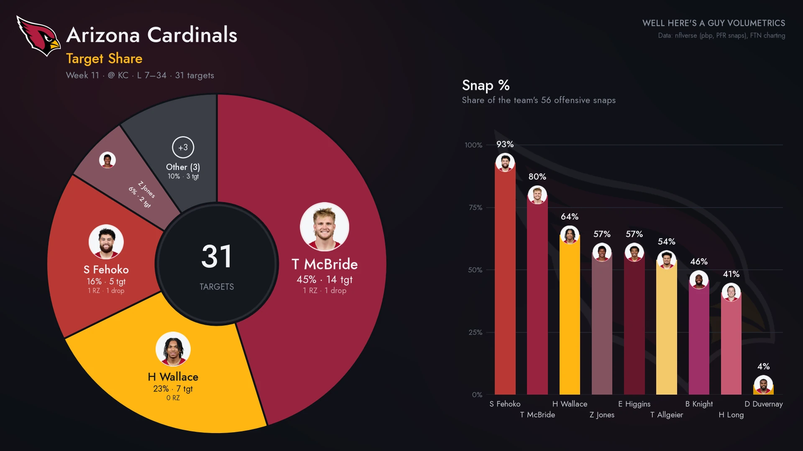
T McBride soaked up 45% of the targets (14 looks) but only got 9-54 out of it. That kind of volume doesn't stay quiet for long. With M Wilson not taking an offensive snap, H Wallace jumped to 23% of the targets after averaging 3%. If M Wilson is out another week, H Wallace is a sneaky pickup.
Why this take
- T McBride: 14/31 = 45.2% target share (>= 40%)
- M Wilson averaged 26% share before, 0 offensive snaps this week; H Wallace share 3% -> 23%, snaps 9% -> 64%
Baltimore Ravens

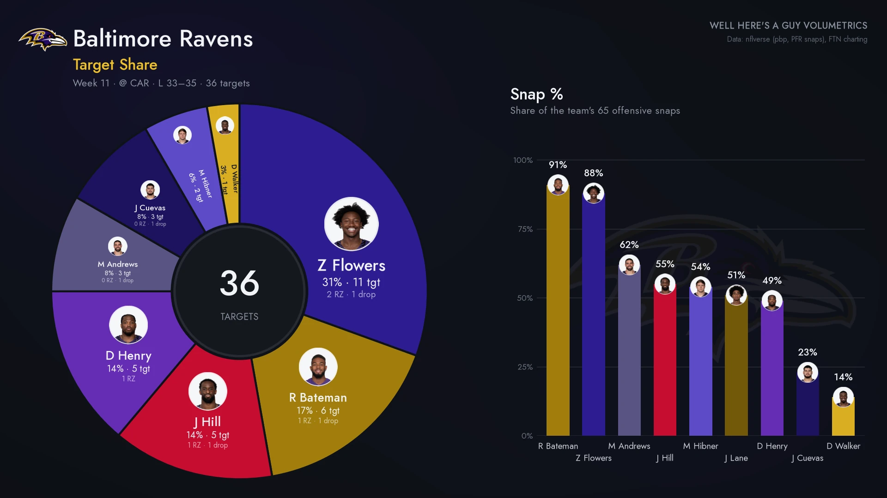
This passing game runs through Z Flowers: 11 targets, 31% of the share. Z Flowers also got 2 of the team's 5 red-zone targets, and that's where touchdowns come from.
Why this take
- Z Flowers: 30.6% target share (>= 28%)
- Z Flowers: 2 of 5 team red-zone targets
Buffalo Bills

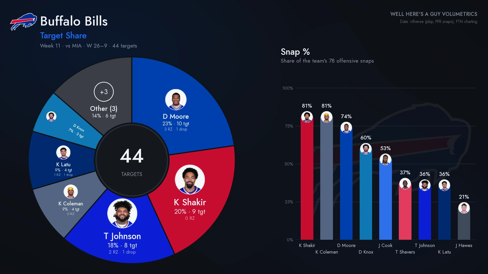
With D Kincaid not taking an offensive snap, K Latu jumped to 9% of the targets after averaging 0%. If D Kincaid is out another week, K Latu is a sneaky pickup. D Moore (23%) and K Shakir (20%) are a lot closer than most people think. K Shakir actually played more snaps (81% to 74%). Notice T Johnson earned 8 targets while only playing 36% of the snaps. That's a guy getting open when he's out there. D Moore also got 3 of the team's 7 red-zone targets, and that's where touchdowns come from.
Why this take
- D Kincaid averaged 17% share before, 0 offensive snaps this week; K Latu share 0% -> 9%, snaps 10% -> 36%
- D Moore 22.7% vs K Shakir 20.5% (gap <= 4%)
- T Johnson: 18% target share on 36% snaps
- D Moore: 3 of 7 team red-zone targets
Carolina Panthers

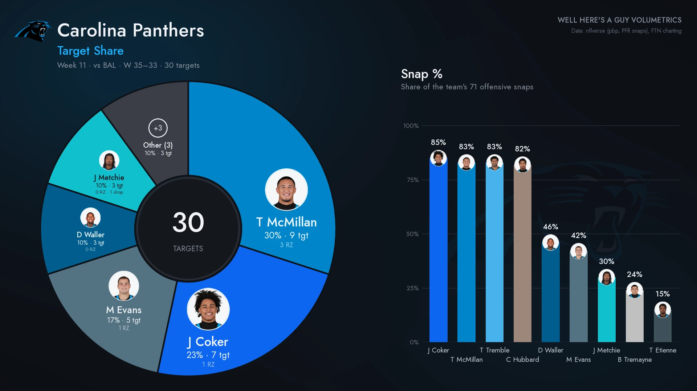
This passing game runs through T McMillan: 9 targets, 30% of the share. T McMillan also got 3 of the team's 5 red-zone targets, and that's where touchdowns come from. Notice T Tremble actually played 83% of the snaps but only got 1 target.
Why this take
- T McMillan: 30.0% target share (>= 28%)
- T McMillan: 3 of 5 team red-zone targets
- T Tremble: 83% snaps but 1 targets (3%)
Chicago Bears

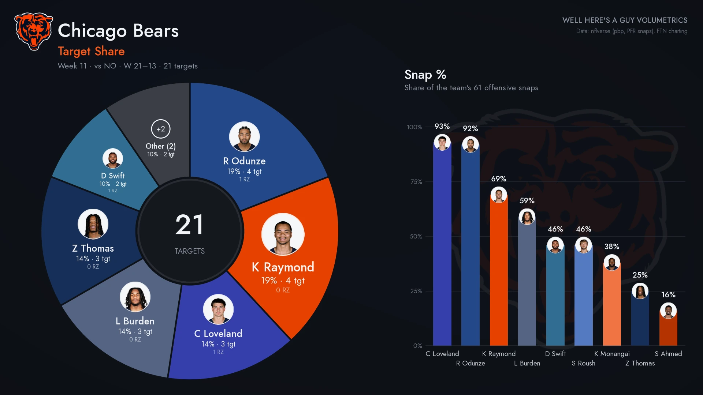
Look at how tight R Odunze and K Raymond are: 4 targets to 4. No one dominated here. 5 different players got 10%+ of the looks, which is fine for the offense and tough for fantasy. Only 21 targets to go around, so even a big share doesn't buy much.
Why this take
- R Odunze 19.0% vs K Raymond 19.0% (gap <= 4%)
- top share 19% (< 25%), 5 players >= 10%
- 21 team targets (<= 22)
Cincinnati Bengals

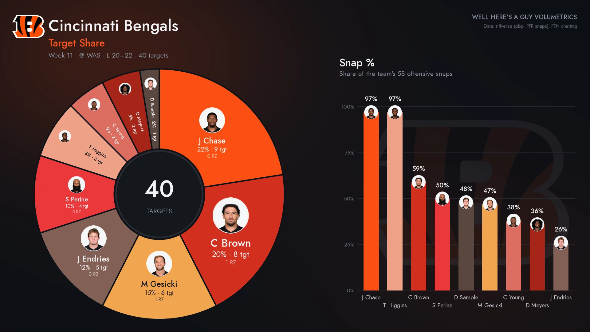
Look at how tight J Chase and C Brown are: 9 targets to 8. And C Brown had the bigger red-zone role (1 RZ to 0). T Higgins only saw 8% of the targets after averaging 22%, even on 97% of the snaps. The role is still there. This is a buy-low window. No one dominated here. 5 different players got 10%+ of the looks, which is fine for the offense and tough for fantasy.
Why this take
- J Chase 22.5% vs C Brown 20.0% (gap <= 4%)
- T Higgins: 22% prior avg -> 8%; snaps 78% -> 97%
- top share 22% (< 25%), 5 players >= 10%
Dallas Cowboys

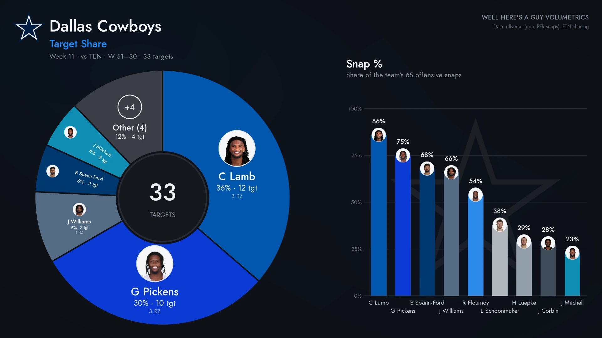
This passing game runs through C Lamb: 12 targets, 36% of the share.
Why this take
- C Lamb: 36.4% target share (>= 28%)
Denver Broncos

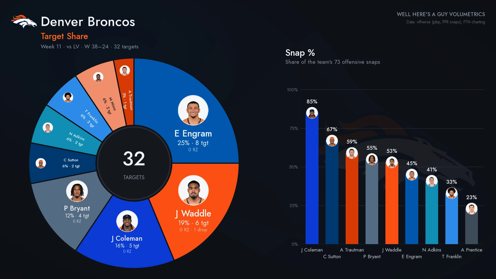
With R Harvey not taking an offensive snap, J Coleman jumped to 16% of the targets after averaging 9%. If R Harvey is out another week, J Coleman is a sneaky pickup. E Engram pulled 25% of the targets on just 45% of the snaps. If that snap share climbs, he's a sneaky add. No wide receiver played more than 67% of the snaps, so a rotation is capping everybody's ceiling.
Why this take
- R Harvey averaged 15% share before, 0 offensive snaps this week; J Coleman share 9% -> 16%, snaps 48% -> 85%
- E Engram: 25% target share on 45% snaps
- max WR snap share 67% (< 75%)
Detroit Lions

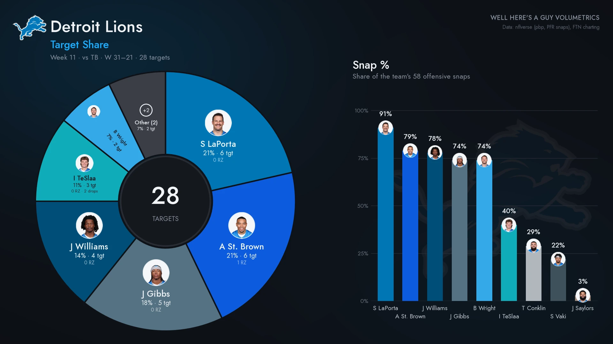
Look at how tight S LaPorta and A St. Brown are: 6 targets to 6. And A St. Brown had the bigger red-zone role (1 RZ to 0). No one dominated here. 5 different players got 10%+ of the looks, which is fine for the offense and tough for fantasy. J Gibbs had 5 targets out of the backfield (18%). That's real PPR value.
Why this take
- S LaPorta 21.4% vs A St. Brown 21.4% (gap <= 4%)
- top share 21% (< 25%), 5 players >= 10%
- J Gibbs (RB): 18% target share
Houston Texans

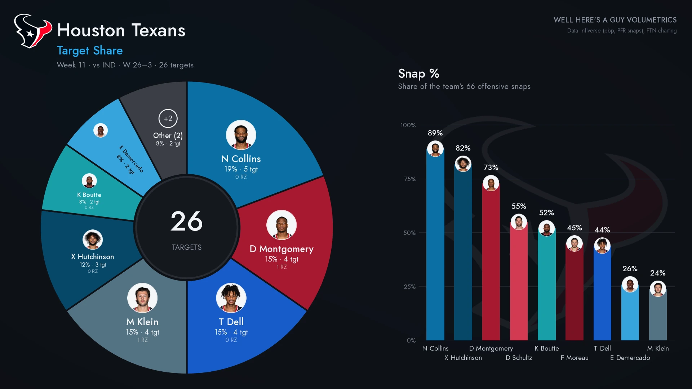
No one dominated here. 5 different players got 10%+ of the looks, which is fine for the offense and tough for fantasy. D Montgomery had 4 targets out of the backfield (15%). That's real PPR value.
Why this take
- top share 19% (< 25%), 5 players >= 10%
- D Montgomery (RB): 15% target share
Indianapolis Colts

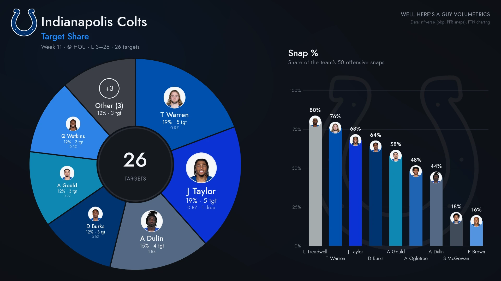
With K Allen not taking an offensive snap, A Dulin jumped to 15% of the targets after averaging 7%. If K Allen is out another week, A Dulin is a sneaky pickup. T Warren (19%) and J Taylor (19%) are a lot closer than most people think. No one dominated here. 6 different players got 10%+ of the looks, which is fine for the offense and tough for fantasy.
Why this take
- K Allen averaged 22% share before, 0 offensive snaps this week; A Dulin share 7% -> 15%, snaps 22% -> 44%
- T Warren 19.2% vs J Taylor 19.2% (gap <= 4%)
- top share 19% (< 25%), 6 players >= 10%
Jacksonville Jaguars

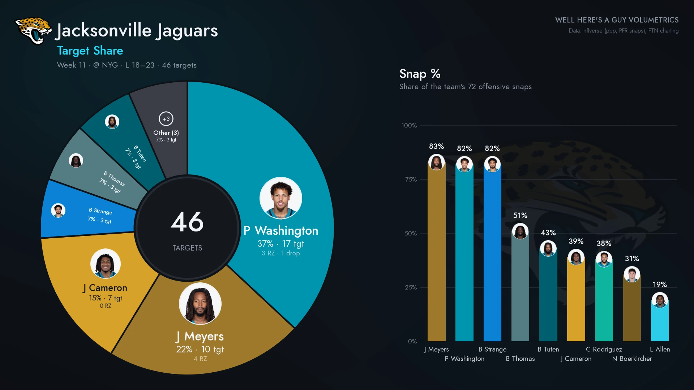
P Washington is the clear No. 1 here with 37% of the targets (17). B Strange was on the field for 82% of the snaps and saw just 3 looks. The routes are there; the targets aren't. 46 targets total, so this team threw a ton. Don't expect every number here to repeat.
Why this take
- P Washington: 37.0% target share (>= 28%)
- B Strange: 82% snaps but 3 targets (7%)
- 46 team targets (>= 45)
Kansas City Chiefs

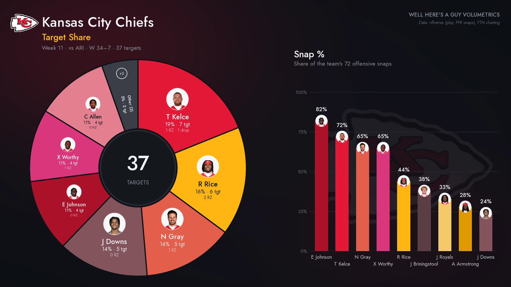
This passing offense is a mess: no receiver cleared 75% of the snaps and nobody got a real share of the targets (top guy was 19%). Hard to trust anyone here until something changes. R Rice got 2 of the team's 5 red-zone targets, and that's where touchdowns come from.
Why this take
- top share 19% (< 25%), 7 players >= 10%, max WR snaps 65%
- R Rice: 2 of 5 team red-zone targets
Las Vegas Raiders

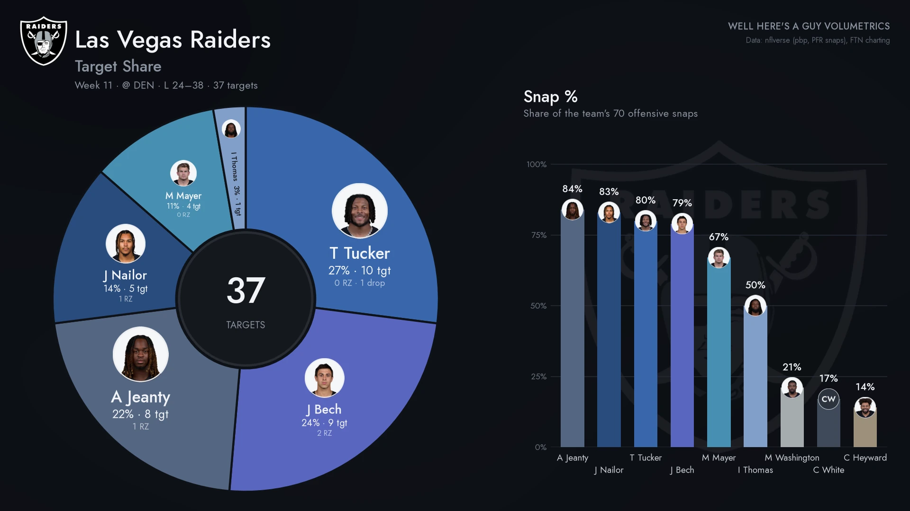
With B Bowers not taking an offensive snap, J Bech jumped to 24% of the targets after averaging 9%. If B Bowers is out another week, J Bech is a sneaky pickup. J Bech also got 2 of the team's 5 red-zone targets, and that's where touchdowns come from. A Jeanty had 8 targets out of the backfield (22%). That's real PPR value.
Why this take
- B Bowers averaged 26% share before, 0 offensive snaps this week; J Bech share 9% -> 24%, snaps 40% -> 79%
- J Bech: 2 of 5 team red-zone targets
- A Jeanty (RB): 22% target share
Los Angeles Chargers

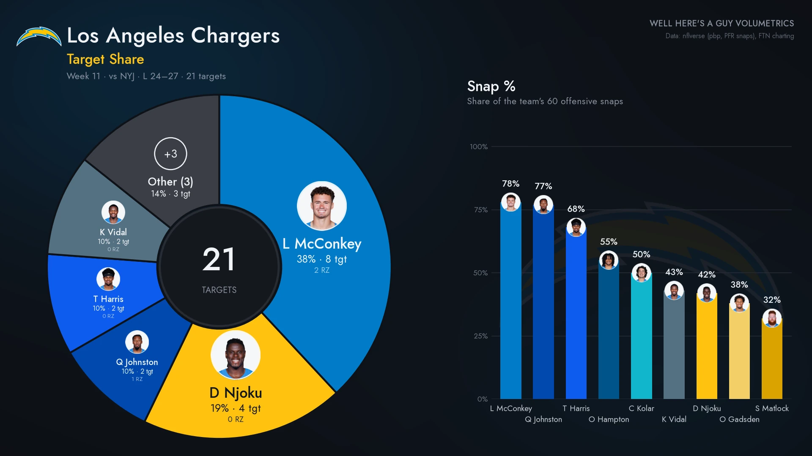
L McConkey is the clear No. 1 here with 38% of the targets (8). Notice D Njoku earned 4 targets while only playing 42% of the snaps. That's a guy getting open when he's out there. L McConkey also got 2 of the team's 3 red-zone targets, and that's where touchdowns come from. Only 21 targets to go around, so even a big share doesn't buy much.
Why this take
- L McConkey: 38.1% target share (>= 28%)
- D Njoku: 19% target share on 42% snaps
- L McConkey: 2 of 3 team red-zone targets
- 21 team targets (<= 22)
Miami Dolphins

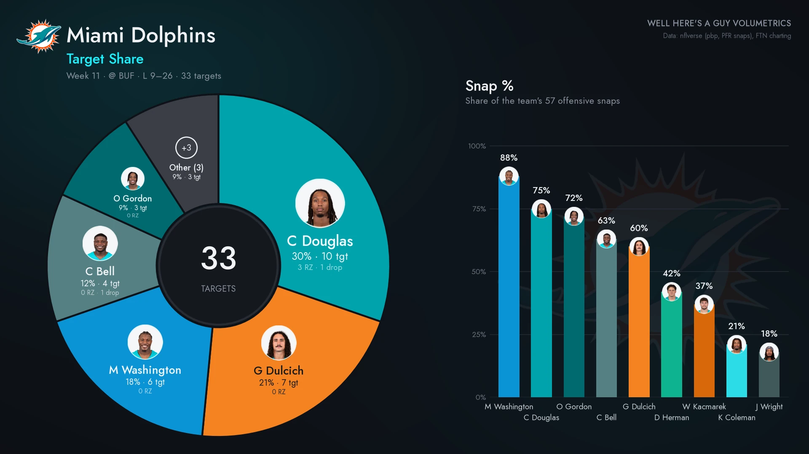
This passing game runs through C Douglas: 10 targets, 30% of the share. G Dulcich pulled 21% of the targets on just 60% of the snaps. If that snap share climbs, he's a sneaky add. C Douglas also got all 3 of the team's red-zone targets, and that's where touchdowns come from.
Why this take
- C Douglas: 30.3% target share (>= 28%)
- G Dulcich: 21% target share on 60% snaps
- C Douglas: 3 of 3 team red-zone targets
Minnesota Vikings

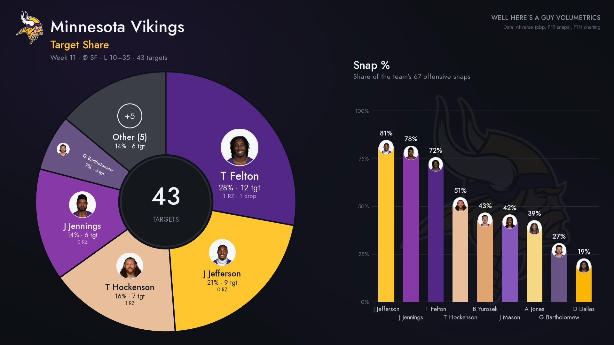
With J Addison not taking an offensive snap, T Felton jumped to 28% of the targets after averaging 5%. If J Addison is out another week, T Felton is a sneaky pickup. G Bartholomew got 2 of the team's 4 red-zone targets, and that's where touchdowns come from.
Why this take
- J Addison averaged 20% share before, 0 offensive snaps this week; T Felton share 5% -> 28%, snaps 37% -> 72%
- G Bartholomew: 2 of 4 team red-zone targets
New Orleans Saints

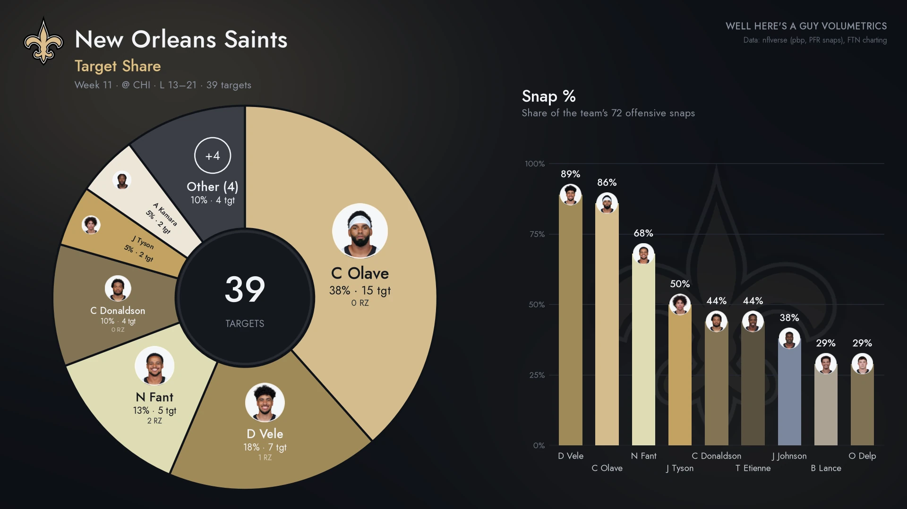
C Olave is the clear No. 1 here with 38% of the targets (15). Don't panic on J Tyson: 5% of the looks this week, but he was at 28% coming in and still played 50% of the snaps. I'd buy low. N Fant got 2 of the team's 4 red-zone targets, and that's where touchdowns come from.
Why this take
- C Olave: 38.5% target share (>= 28%)
- J Tyson: 28% prior avg -> 5%; snaps 48% -> 50%
- N Fant: 2 of 4 team red-zone targets
New York Giants

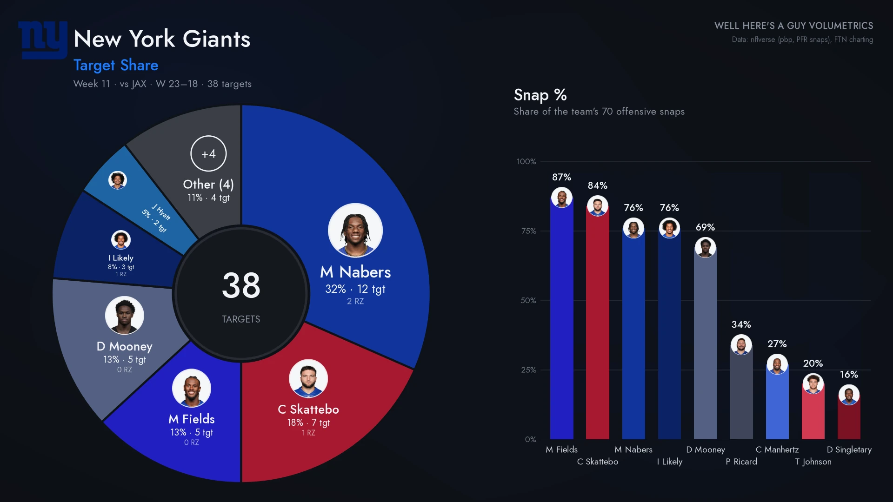
M Nabers is the clear No. 1 here with 32% of the targets (12). Notice C Skattebo is trending up: 18% of the targets this week vs 7% coming in. Don't panic on I Likely: 8% of the looks this week, but he was at 27% coming in and still played 76% of the snaps. I'd buy low. M Nabers also got 2 of the team's 4 red-zone targets, and that's where touchdowns come from.
Why this take
- M Nabers: 31.6% target share (>= 28%)
- C Skattebo: 7% prior avg -> 18% (+11%)
- I Likely: 27% prior avg -> 8%; snaps 76% -> 76%
- M Nabers: 2 of 4 team red-zone targets
New York Jets

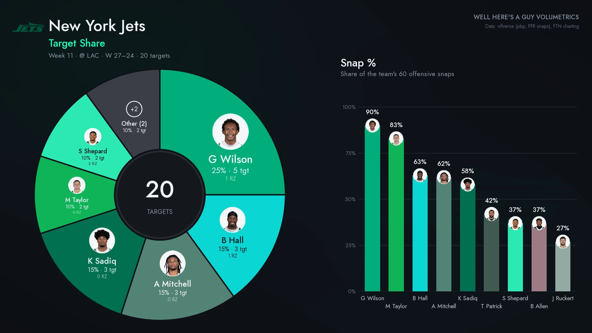
S Shepard got 2 of the team's 4 red-zone targets, and that's where touchdowns come from. B Hall had 3 targets out of the backfield (15%). That's real PPR value. Only 20 targets to go around, so even a big share doesn't buy much.
Why this take
- S Shepard: 2 of 4 team red-zone targets
- B Hall (RB): 15% target share
- 20 team targets (<= 22)
Philadelphia Eagles

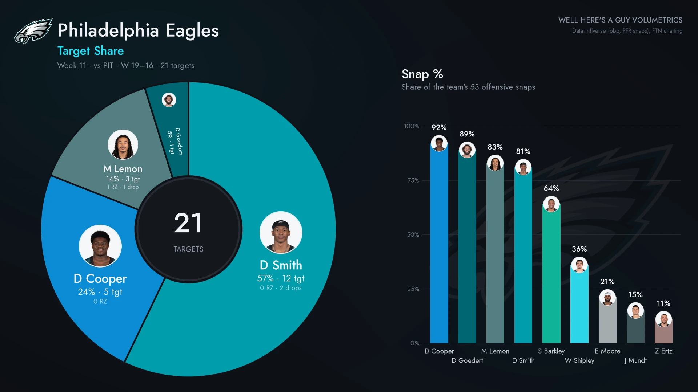
D Smith soaked up 57% of the targets (12 looks) but only got 5-41 out of it. That kind of volume doesn't stay quiet for long. D Wicks didn't play a snap, and D Cooper is the guy who soaked it up: 24% of the targets, up from 11%. Keep him in mind if D Wicks misses more time. D Goedert was on the field for 89% of the snaps and saw just 1 look. The routes are there; the targets aren't. D Smith did drop 2 balls, which is the kind of thing that costs you targets if it keeps up.
Why this take
- D Smith: 12/21 = 57.1% target share (>= 40%)
- D Wicks averaged 18% share before, 0 offensive snaps this week; D Cooper share 11% -> 24%, snaps 65% -> 92%
- D Goedert: 89% snaps but 1 targets (5%)
- D Smith: 2 drops (FTN)
Pittsburgh Steelers

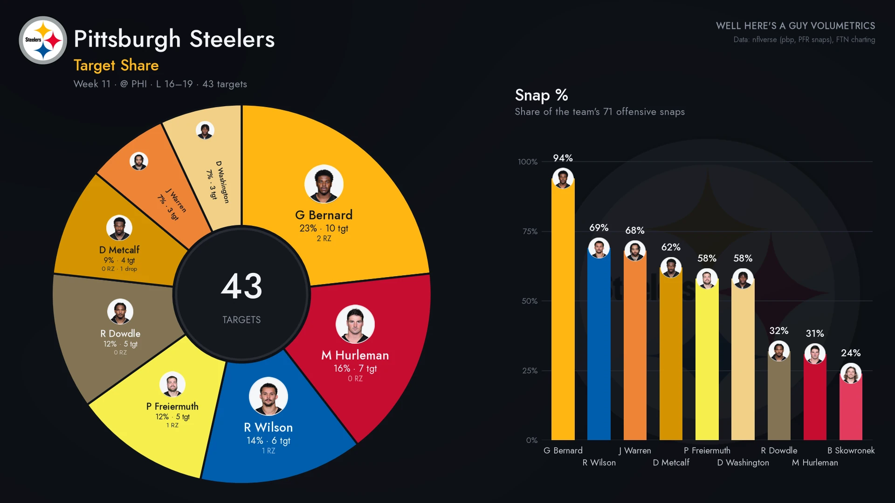
D Metcalf fell to 9% of the targets after averaging 23%, and his snaps dropped to 62% from 93%. That looks like a role change, not noise, so I'd wait a week before buying. G Bernard got 2 of the team's 5 red-zone targets, and that's where touchdowns come from. A lot of targets spread around this week: 5 guys hit double-digit share and nobody topped 23%.
Why this take
- D Metcalf: 23% prior avg -> 9%; snaps 93% -> 62%
- G Bernard: 2 of 5 team red-zone targets
- top share 23% (< 25%), 5 players >= 10%
San Francisco 49ers

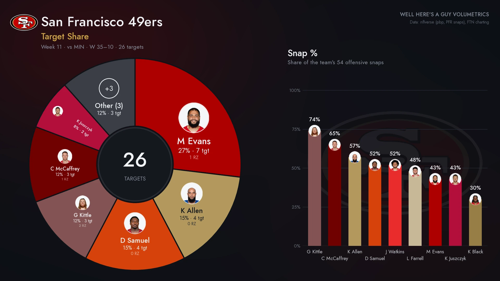
Don't panic on G Kittle: 12% of the looks this week, but he was at 24% coming in and still played 74% of the snaps. I'd buy low. M Evans pulled 27% of the targets on just 43% of the snaps. If that snap share climbs, he's a sneaky add. G Kittle also got 2 of the team's 4 red-zone targets, and that's where touchdowns come from. No wide receiver played more than 57% of the snaps, so a rotation is capping everybody's ceiling.
Why this take
- G Kittle: 24% prior avg -> 12%; snaps 79% -> 74%
- M Evans: 27% target share on 43% snaps
- G Kittle: 2 of 4 team red-zone targets
- max WR snap share 57% (< 75%)
Tampa Bay Buccaneers

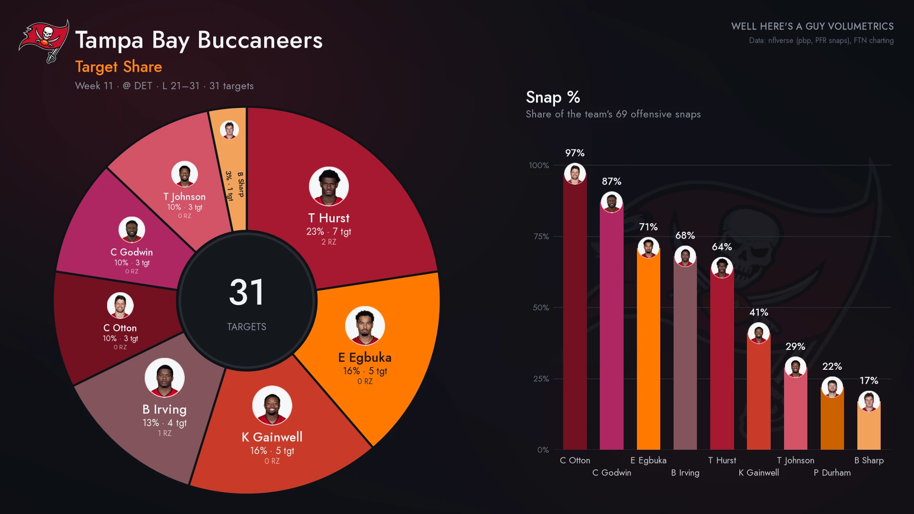
C Godwin only saw 10% of the targets after averaging 20%, even on 87% of the snaps. The role is still there. This is a buy-low window. T Hurst got 2 of the team's 4 red-zone targets, and that's where touchdowns come from. No one dominated here. 4 different players got 10%+ of the looks, which is fine for the offense and tough for fantasy.
Why this take
- C Godwin: 20% prior avg -> 10%; snaps 83% -> 87%
- T Hurst: 2 of 4 team red-zone targets
- top share 23% (< 25%), 4 players >= 10%
Tennessee Titans

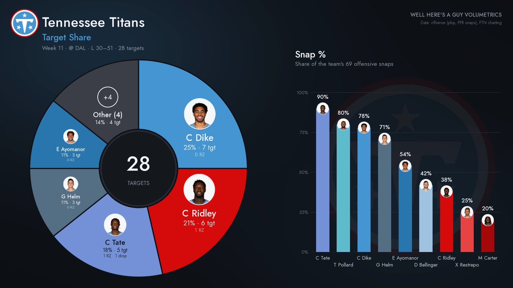
With W Robinson not taking an offensive snap, C Dike jumped to 25% of the targets after averaging 5%. If W Robinson is out another week, C Dike is a sneaky pickup. Notice C Ridley is trending up: 21% of the targets this week vs 6% coming in.
Why this take
- W Robinson averaged 20% share before, 0 offensive snaps this week; C Dike share 5% -> 25%, snaps 30% -> 78%
- C Ridley: 6% prior avg -> 21% (+16%)
Washington Commanders

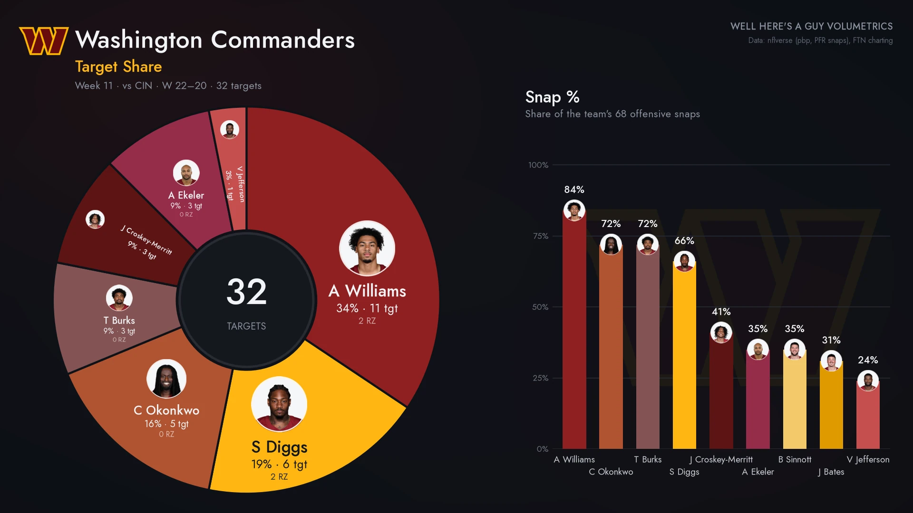
T McLaurin didn't play a snap, and A Williams is the guy who soaked it up: 34% of the targets, up from 15%. Keep him in mind if T McLaurin misses more time. A Williams also got 2 of the team's 4 red-zone targets, and that's where touchdowns come from.
Why this take
- T McLaurin averaged 18% share before, 0 offensive snaps this week; A Williams share 15% -> 34%, snaps 65% -> 84%
- A Williams: 2 of 4 team red-zone targets
Week 11 backfields
| Top 8 rushers | ||||||
|---|---|---|---|---|---|---|
| 27 | 120 | 82% | 82% | 3 | 17.9 | |
| 26 | 107 | 79% | 73% | 3 | 20.2 | |
| 24 | 111 | 77% | 85% | 8 | 24.4 | |
| 23 | 98 | 88% | 74% | 10 | 24.4 | |
| 23 | 105 | 79% | 82% | 6 | 20.1 | |
| 22 | 89 | 85% | 53% | 4 | 17.5 | |
| 21 | 110 | 78% | 80% | 0 | 12.5 | |
| 20 | 86 | 56% | 63% | 6 | 16.7 |
Tap a back to jump to his team, or a column to re-sort. HVT = catches plus carries inside the 10. xFP = the PPR points an average back would score on that workload.
League view

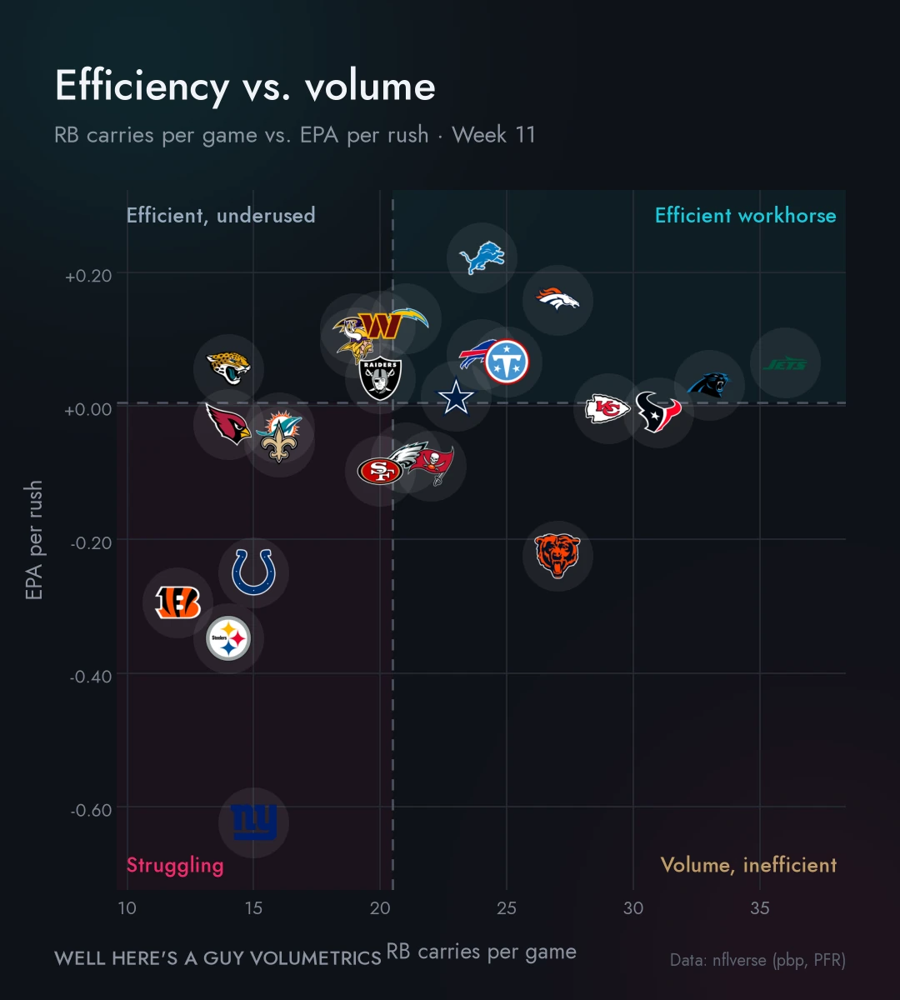

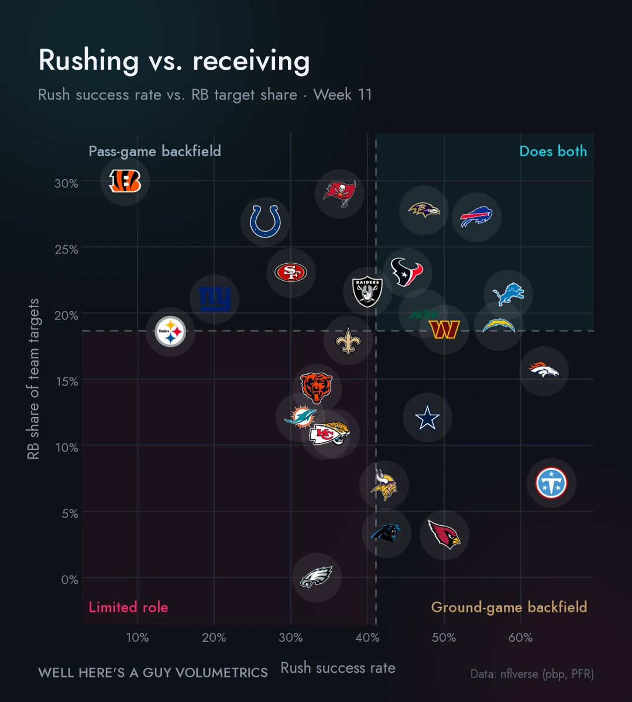

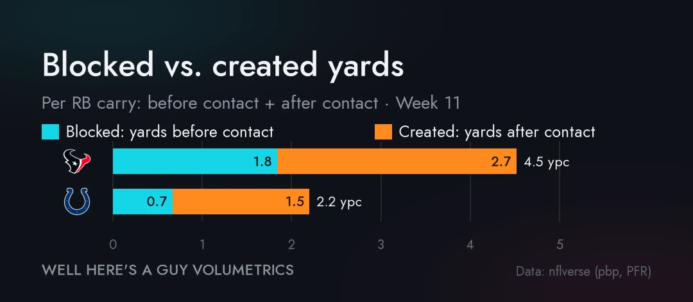

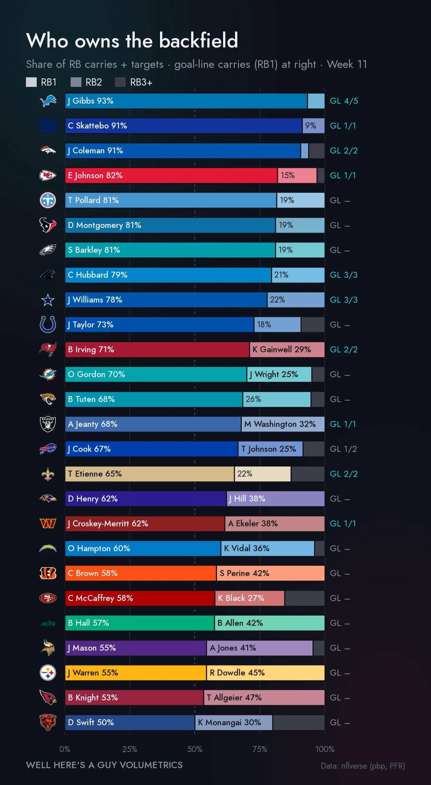
Team by team
Arizona Cardinals

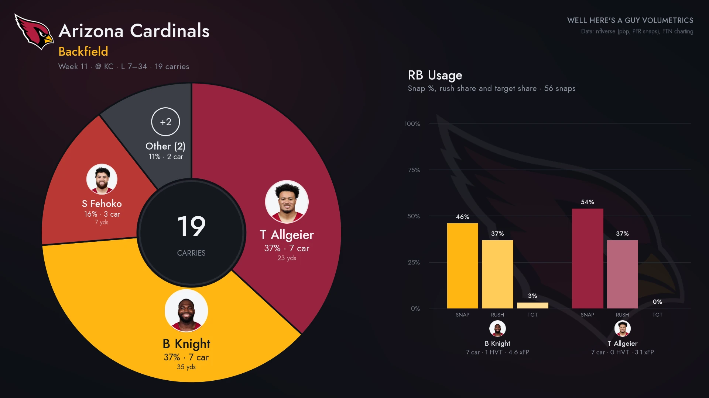
This is a committee: B Knight 37% of the carries, T Allgeier 37%. B Knight has the passing-down edge with 1 targets to 0. Hard to trust either as more than a flex.
Why this take
- B Knight 37% / T Allgeier 37% of carries
Baltimore Ravens

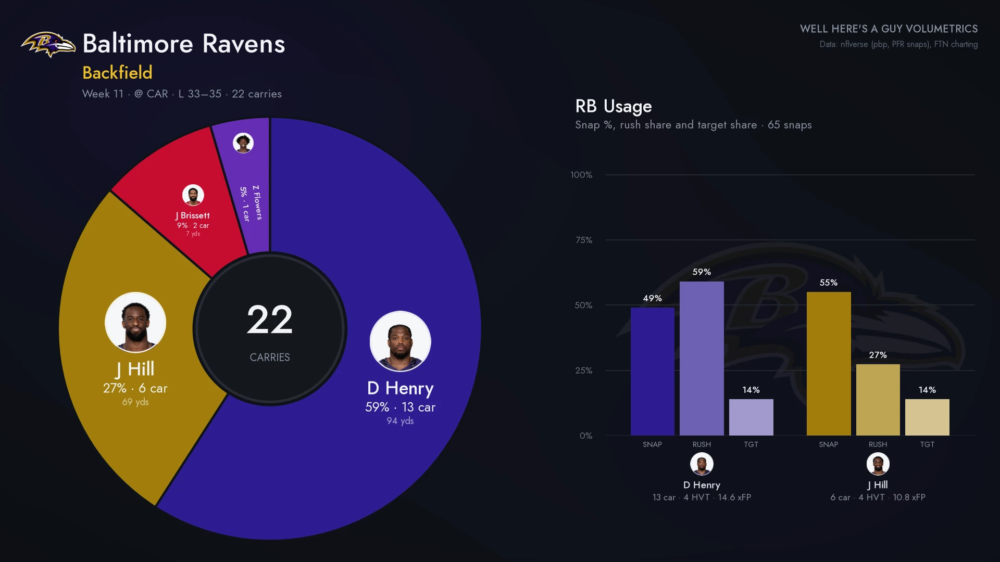
D Henry is the lead back (13 carries, 59%) but not a workhorse: he played 49% of the snaps and J Hill still got 6 carries. J Hill is the passing-down back: 5 targets (14% of the team's) on 55% of the snaps. That's real value in PPR.
Why this take
- D Henry: 59% rush share, 49% snaps
- J Hill: 14% target share, 27% rush share
Buffalo Bills

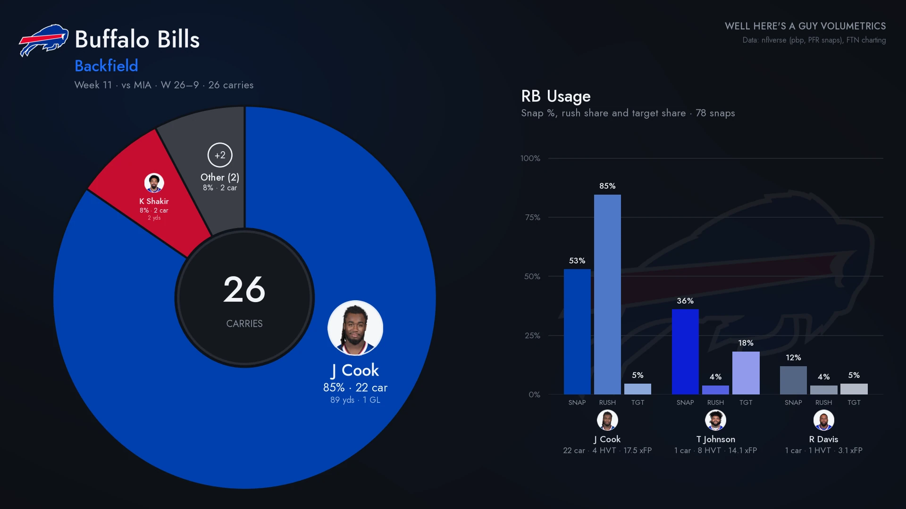
J Cook is the lead back (22 carries, 85%) but not a workhorse: he played 53% of the snaps. T Johnson is the passing-down back: 8 targets (18% of the team's) on 36% of the snaps. That's real value in PPR. T Johnson had 8 high-value touches (catches plus carries inside the 10). Those are the touches that score fantasy points.
Why this take
- J Cook: 85% rush share, 53% snaps
- T Johnson: 18% target share, 4% rush share
- T Johnson: 8 high-value touches
Carolina Panthers

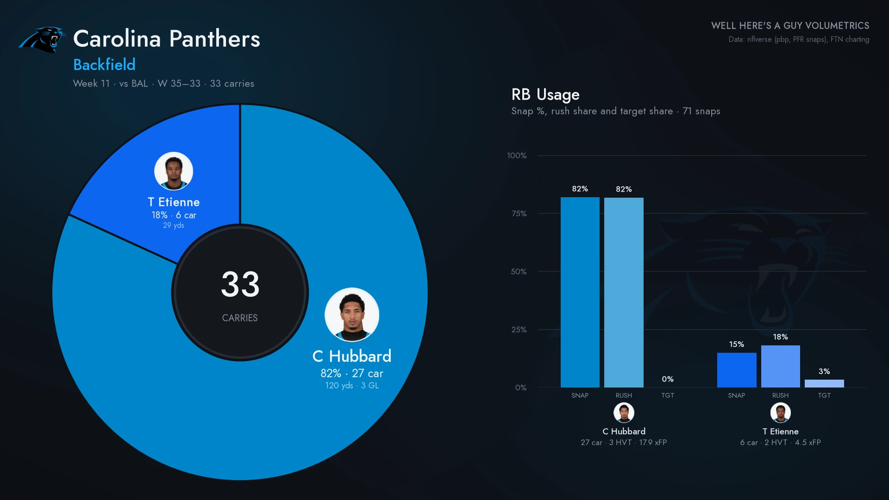
No committee here. C Hubbard played 82% of the snaps and took 27 of 33 carries. That's been his job all 4 games (87% of the carries). C Hubbard also got all 3 of the team's carries inside the 5. That's the touchdown role.
Why this take
- C Hubbard: 82% snaps, 82% rush share
- C Hubbard: 3 of 3 carries inside the 5
Chicago Bears

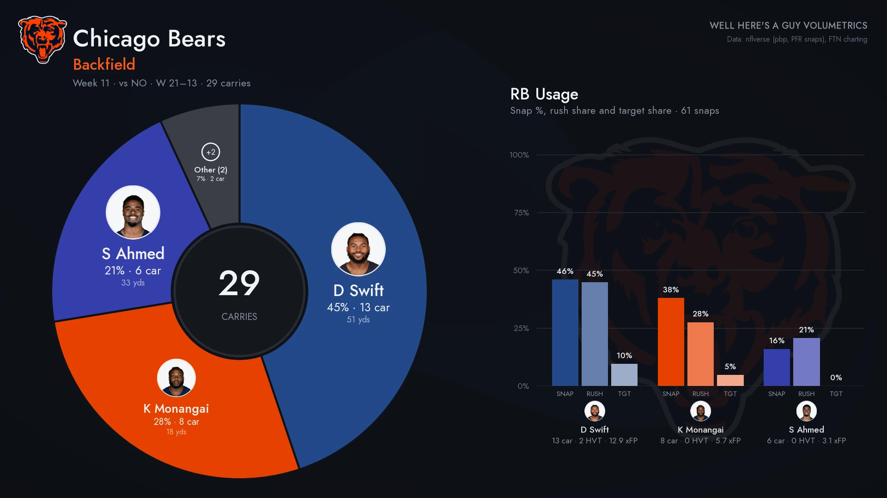
D Swift's grip on the backfield is slipping: 83% of the carries early in this stretch, 58% lately.
Why this take
- D Swift: rush share 83% -> 58% over 4
Cincinnati Bengals

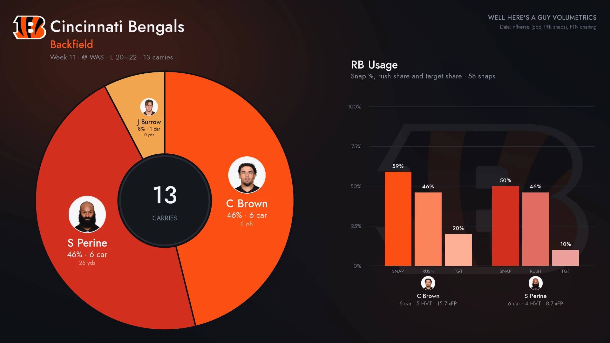
This is a committee: C Brown 46% of the carries, S Perine 46%. C Brown has the passing-down edge with 8 targets to 4. Hard to trust either as more than a flex.
Why this take
- C Brown 46% / S Perine 46% of carries
Dallas Cowboys

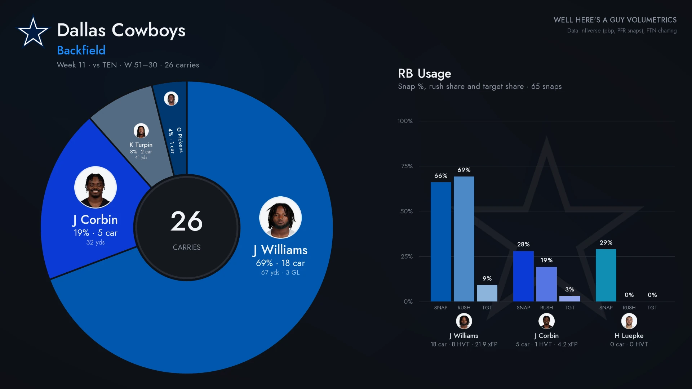
J Williams is the lead back (18 carries, 69%) but not a workhorse: he played 66% of the snaps and J Corbin still got 5 carries. J Williams also got all 3 of the team's carries inside the 5. That's the touchdown role.
Why this take
- J Williams: 69% rush share, 66% snaps
- J Williams: 3 of 3 carries inside the 5
Denver Broncos

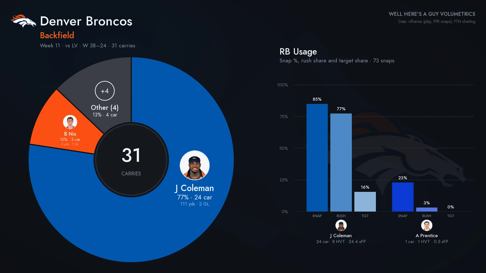
No committee here. J Coleman played 85% of the snaps and took 24 of 31 carries. That's been his job all 4 games (61% of the carries). J Coleman also got 2 of the team's 3 carries inside the 5. That's the touchdown role.
Why this take
- J Coleman: 85% snaps, 77% rush share
- J Coleman: 2 of 3 carries inside the 5
Detroit Lions

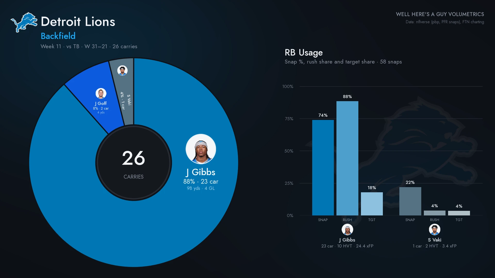
No committee here. J Gibbs played 74% of the snaps and took 23 of 26 carries. That's been his job all 4 games (74% of the carries). J Gibbs also got 4 of the team's 5 carries inside the 5. That's the touchdown role.
Why this take
- J Gibbs: 74% snaps, 88% rush share
- J Gibbs: 4 of 5 carries inside the 5
Houston Texans

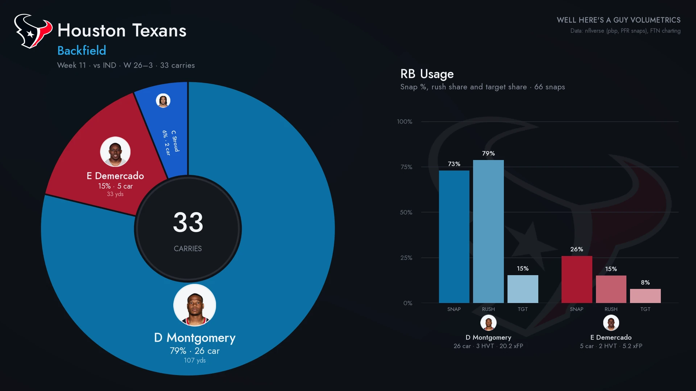
W Marks didn't play in Week 11 after taking 77% of the carries early in this stretch. D Montgomery took 79% of the carries in Week 11. If W Marks sits again, D Montgomery is the add. No committee here. D Montgomery played 73% of the snaps and took 26 of 33 carries.
Why this take
- W Marks: 77% rush share early, missed [11]
- D Montgomery: 73% snaps, 79% rush share
Indianapolis Colts

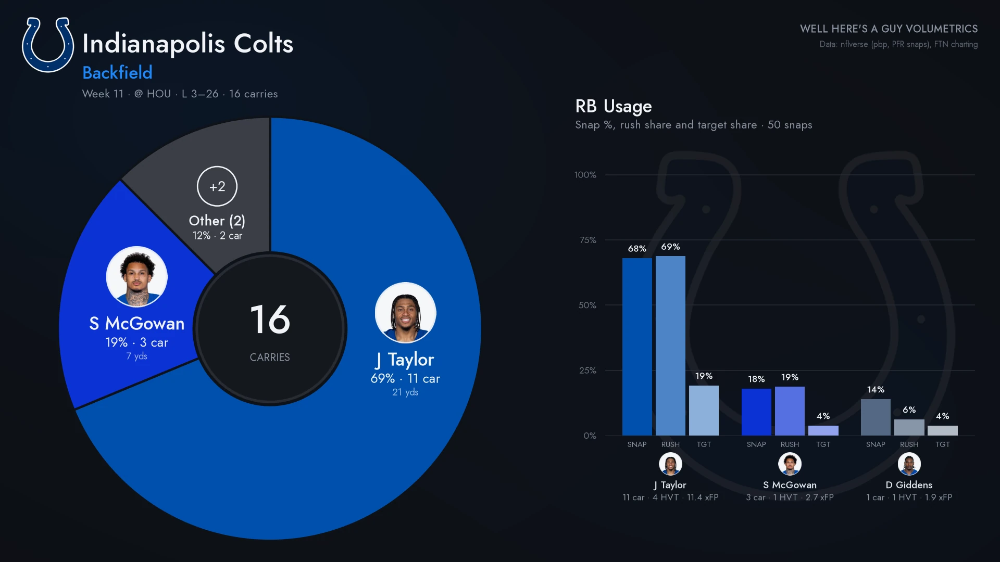
J Taylor is the lead back (11 carries, 69%) but not a workhorse: he played 68% of the snaps and S McGowan still got 3 carries.
Why this take
- J Taylor: 69% rush share, 68% snaps
Jacksonville Jaguars

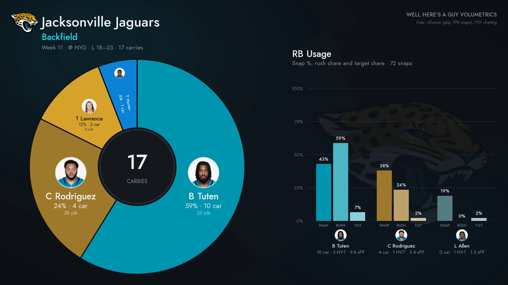
B Tuten is the lead back (10 carries, 59%) but not a workhorse: he played 43% of the snaps and C Rodriguez still got 4 carries.
Why this take
- B Tuten: 59% rush share, 43% snaps
Kansas City Chiefs

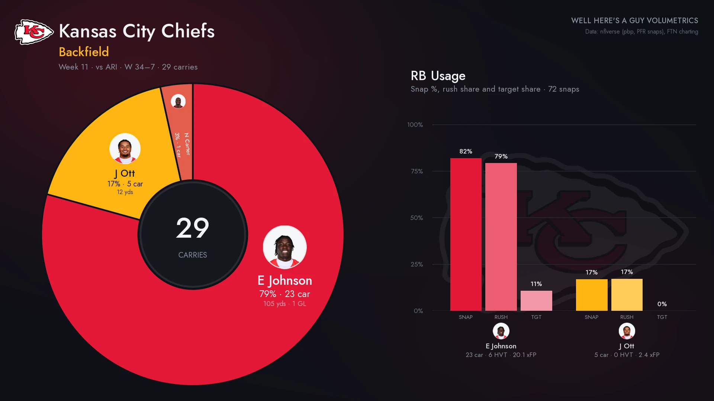
K Walker didn't play in Week 11 after taking 77% of the carries early in this stretch. E Johnson took 79% of the carries in Week 11. If K Walker sits again, E Johnson is the add. E Johnson is a true workhorse: 82% of the snaps and 79% of the carries (23). E Johnson had 6 high-value touches (catches plus carries inside the 10). Those are the touches that score fantasy points.
Why this take
- K Walker: 77% rush share early, missed [10, 11]
- E Johnson: 82% snaps, 79% rush share
- E Johnson: 6 high-value touches
Las Vegas Raiders

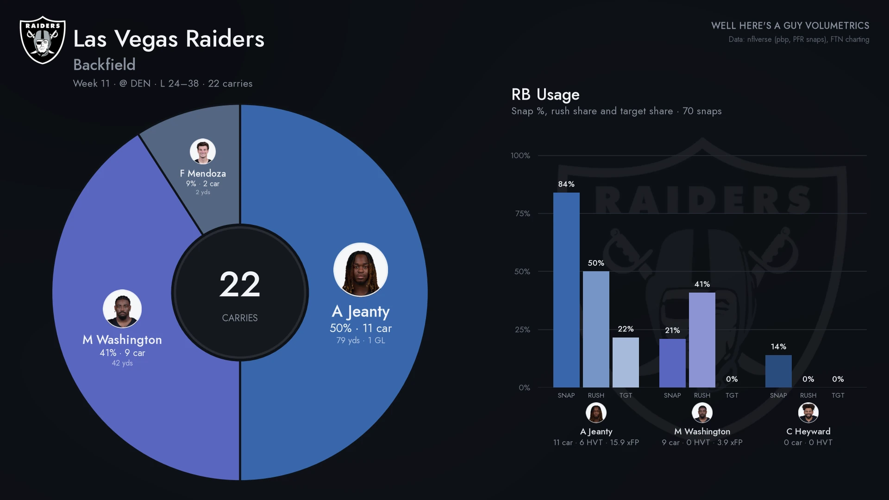
This is a committee: A Jeanty 50% of the carries, M Washington 41%. A Jeanty has the passing-down edge with 8 targets to 0. Hard to trust either as more than a flex. A Jeanty had 6 high-value touches (catches plus carries inside the 10). Those are the touches that score fantasy points.
Why this take
- A Jeanty 50% / M Washington 41% of carries
- A Jeanty: 6 high-value touches
Los Angeles Chargers

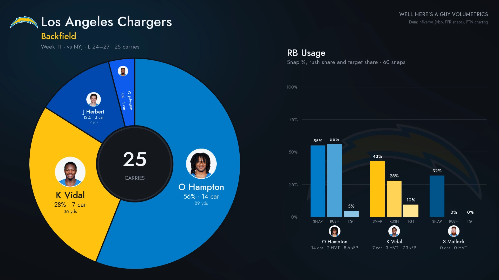
O Hampton is the lead back (14 carries, 56%) but not a workhorse: he played 55% of the snaps and K Vidal still got 7 carries.
Why this take
- O Hampton: 56% rush share, 55% snaps
Miami Dolphins

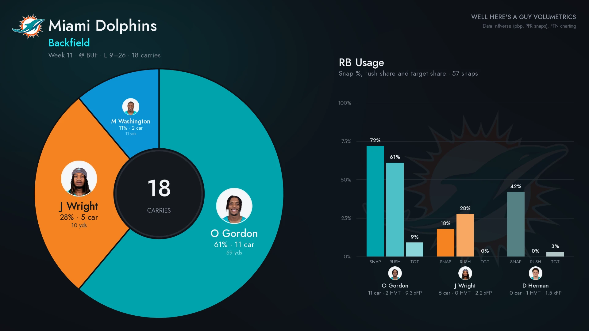
O Gordon is the lead back (11 carries, 61%) but not a workhorse: he played 72% of the snaps and J Wright still got 5 carries.
Why this take
- O Gordon: 61% rush share, 72% snaps
Minnesota Vikings

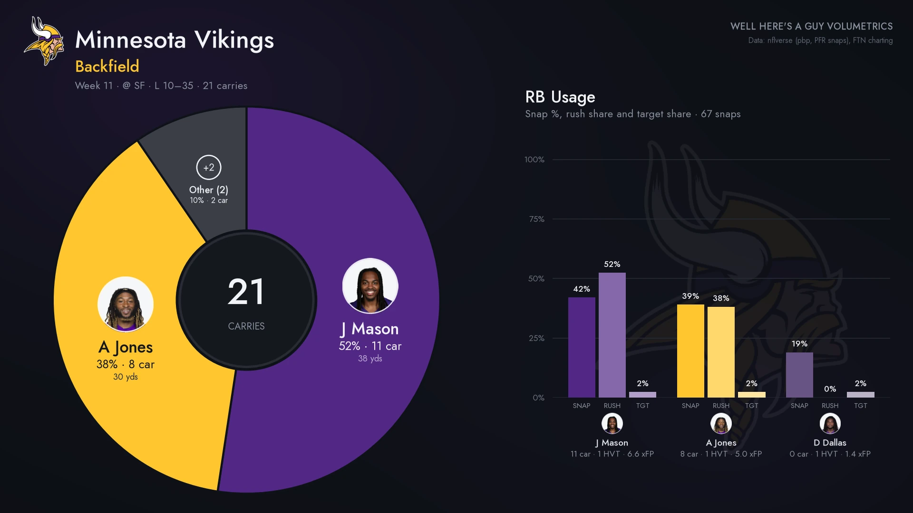
This is a committee: J Mason 52% of the carries, A Jones 38%. Hard to trust either as more than a flex.
Why this take
- J Mason 52% / A Jones 38% of carries
New Orleans Saints

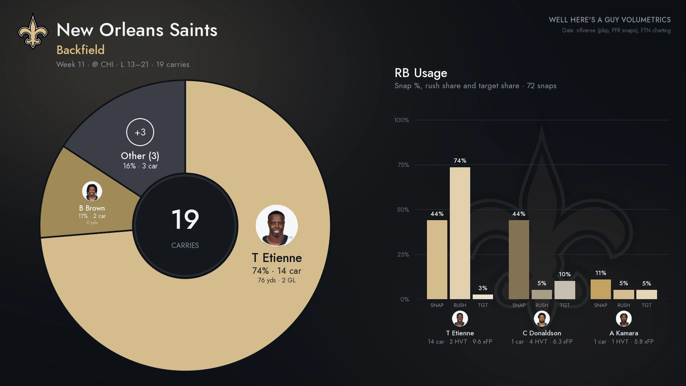
T Etienne is the lead back (14 carries, 74%) but not a workhorse: he played 44% of the snaps. T Etienne also got both of the team's carries inside the 5. That's the touchdown role. C Donaldson is the passing-down back: 4 targets (10% of the team's) on 44% of the snaps. That's real value in PPR.
Why this take
- T Etienne: 74% rush share, 44% snaps
- T Etienne: 2 of 2 carries inside the 5
- C Donaldson: 10% target share, 5% rush share
New York Giants

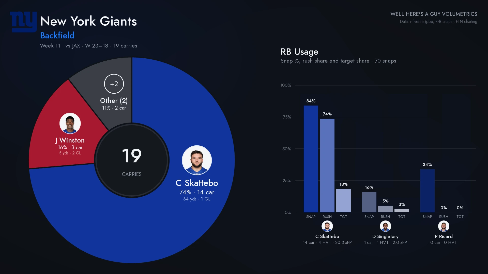
No committee here. C Skattebo played 84% of the snaps and took 14 of 19 carries. D Singletary's grip on the backfield is slipping: 46% of the carries early in this stretch, 5% lately.
Why this take
- C Skattebo: 84% snaps, 74% rush share
- D Singletary: rush share 46% -> 5% over 4
New York Jets

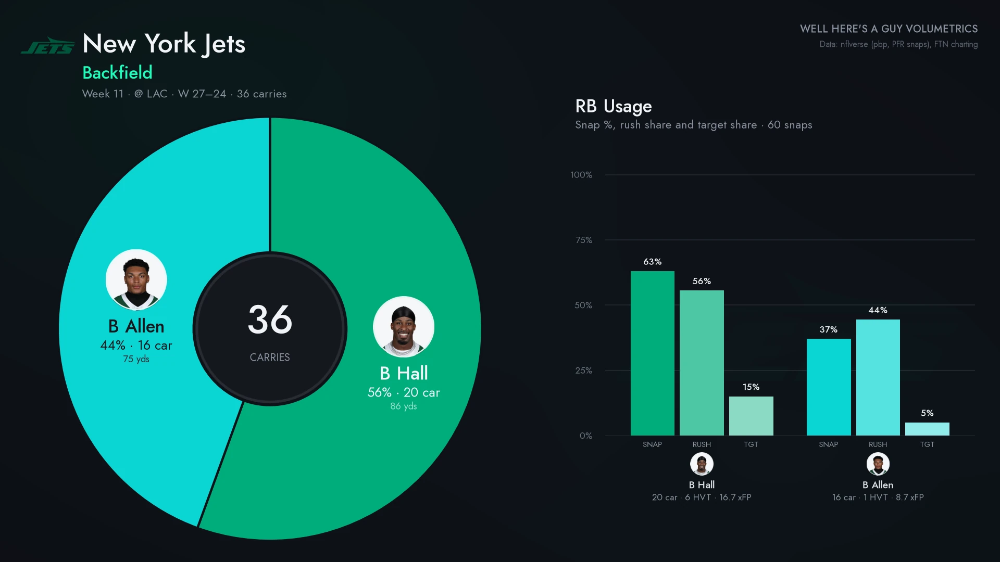
This is a committee: B Hall 56% of the carries, B Allen 44%. B Hall has the passing-down edge with 3 targets to 1. Hard to trust either as more than a flex. B Hall had 6 high-value touches (catches plus carries inside the 10). Those are the touches that score fantasy points.
Why this take
- B Hall 56% / B Allen 44% of carries
- B Hall: 6 high-value touches
Philadelphia Eagles

S Barkley is the lead back (17 carries, 71%) but not a workhorse: he played 64% of the snaps and W Shipley still got 4 carries.
Why this take
- S Barkley: 71% rush share, 64% snaps
Pittsburgh Steelers

J Warren is the lead back (9 carries, 53%) but not a workhorse: he played 68% of the snaps and R Dowdle still got 5 carries. R Dowdle is the passing-down back: 5 targets (12% of the team's) on 32% of the snaps. That's real value in PPR.
Why this take
- J Warren: 53% rush share, 68% snaps
- R Dowdle: 12% target share, 29% rush share
San Francisco 49ers

C McCaffrey is the lead back (12 carries, 55%) but not a workhorse: he played 65% of the snaps and K Black still got 6 carries.
Why this take
- C McCaffrey: 55% rush share, 65% snaps
Tampa Bay Buccaneers

B Irving is the lead back (18 carries, 82%) but not a workhorse: he played 68% of the snaps and K Gainwell still got 4 carries. B Irving also got both of the team's carries inside the 5. That's the touchdown role. K Gainwell's grip on the backfield is slipping: 38% of the carries early in this stretch, 18% lately.
Why this take
- B Irving: 82% rush share, 68% snaps
- B Irving: 2 of 2 carries inside the 5
- K Gainwell: rush share 38% -> 18% over 4
Tennessee Titans

No committee here. T Pollard played 80% of the snaps and took 21 of 27 carries. That's been his job all 4 games (81% of the carries).
Why this take
- T Pollard: 80% snaps, 78% rush share
Washington Commanders

This is a committee: J Croskey-Merritt 59% of the carries, A Ekeler 32%. Hard to trust either as more than a flex. R White's grip on the backfield is slipping: 45% of the carries early in this stretch, 22% lately.
Why this take
- J Croskey-Merritt 59% / A Ekeler 32% of carries
- R White: rush share 45% -> 22% over 4
Trends: each team's last 4 games
Top target shares, last 4 games
| J Smith-Njigba | SEA | 41% |
| C Lamb | 36% | |
| P Nacua | LA | 34% |
| J Chase | 32% | |
| M Golden | GB | 32% |
Arizona Cardinals

| Target share | Wk 8 | Wk 9 | Wk 10 | Wk 11 | All |
|---|---|---|---|---|---|
| T McBride | 20% | 28% | 28% | 45% | 29% |
| M Wilson | 37% | 24% | – | – | 18% |
| T Allgeier | 12% | 10% | 6% | 0% | 8% |
| S Fehoko | 2% | 3% | 11% | 16% | 8% |
| H Wallace | – | 0% | 6% | 23% | 7% |
T McBride leads this team at 29% of the targets over the last 4, but it's swung anywhere from 20% to 45% week to week. Expect some boom and some bust. M Wilson didn't play in Week 10 and Week 11 after drawing 30% of the targets early in this stretch. If he's back, he should slide right back into that role, so watch his status. Notice S Fehoko's snaps went from 49% to 84% over this stretch. The targets usually follow the snaps. M Wilson also has 7 of the team's 17 red-zone targets over the last 4. That's the touchdown role.
Why this take
- T McBride: 29.4% share over 4; weekly range 20%-45%
- M Wilson: share 30% -> 0%; snaps 81% -> 0%
- S Fehoko: snaps 49% -> 84%
- M Wilson: 7 of 17 team RZ targets over 4
Atlanta Falcons

| Target share | Wk 7 | Wk 8 | Wk 9 | Wk 10 | All |
|---|---|---|---|---|---|
| D London | 31% | 26% | 19% | 29% | 27% |
| K Pitts | 16% | 22% | 19% | 12% | 16% |
| B Robinson | 16% | 4% | 26% | 12% | 15% |
| J Dotson | 9% | 22% | 7% | 14% | 13% |
| O Zaccheaus | – | 9% | 11% | 10% | 7% |
D London is the clear No. 1 over the last 4 games: 33 targets, 27% of the share. B Robinson is trending the right way: 10% of the targets early in this stretch, 19% in the last two games. Get him before everyone notices. Notice K Pitts' snaps went from 56% to 72% over this stretch. The targets usually follow the snaps.
Why this take
- D London: 26.6% share over 4 games
- B Robinson: 10% share in the first games of the window -> 19% in the latest
- K Pitts: snaps 56% -> 72%
Baltimore Ravens

| Target share | Wk 8 | Wk 9 | Wk 10 | Wk 11 | All |
|---|---|---|---|---|---|
| Z Flowers | 19% | 38% | 15% | 31% | 23% |
| J Hill | 31% | 19% | 15% | 14% | 18% |
| M Andrews | 15% | 12% | 17% | 8% | 14% |
| R Bateman | 12% | 12% | 11% | 17% | 13% |
| J Lane | 4% | 0% | 23% | 0% | 10% |
J Hill's share has slipped from 25% to 14%, but he's still playing 52% of the snaps. The role is there. This is a buy-low window. Notice R Bateman's snaps went from 69% to 91% over this stretch. The targets usually follow the snaps.
Why this take
- J Hill: share 25% -> 14%; snaps 50% -> 52%
- R Bateman: snaps 69% -> 91%
Buffalo Bills

| Target share | Wk 8 | Wk 9 | Wk 10 | Wk 11 | All |
|---|---|---|---|---|---|
| D Moore | 21% | 17% | 29% | 23% | 22% |
| K Shakir | 18% | 14% | 14% | 20% | 17% |
| K Coleman | 9% | 21% | 14% | 9% | 13% |
| T Johnson | 9% | 7% | 5% | 18% | 11% |
| D Knox | 6% | 17% | 14% | 7% | 10% |
D Moore has 6 of the team's 16 red-zone targets over the last 4. That's the touchdown role.
Why this take
- D Moore: 6 of 16 team RZ targets over 4
Carolina Panthers

| Target share | Wk 8 | Wk 9 | Wk 10 | Wk 11 | All |
|---|---|---|---|---|---|
| T McMillan | 31% | 16% | 24% | 30% | 25% |
| J Coker | 14% | 14% | 14% | 23% | 16% |
| D Waller | 6% | 27% | 14% | 10% | 15% |
| C Hubbard | 23% | 14% | 17% | 0% | 14% |
| T Tremble | 9% | 16% | 17% | 3% | 11% |
T McMillan leads this team at 25% of the targets over the last 4, but it's swung anywhere from 16% to 31% week to week. Expect some boom and some bust. C Hubbard's share has slipped from 18% to 9%, but he's still playing 83% of the snaps. The role is there. This is a buy-low window.
Why this take
- T McMillan: 25.2% share over 4; weekly range 16%-31%
- C Hubbard: share 18% -> 9%; snaps 90% -> 83%
Chicago Bears

| Target share | Wk 7 | Wk 8 | Wk 9 | Wk 11 | All |
|---|---|---|---|---|---|
| C Loveland | 40% | 26% | 17% | 14% | 25% |
| L Burden | 13% | 26% | 29% | 14% | 22% |
| R Odunze | 17% | 18% | 20% | 19% | 18% |
| K Raymond | 7% | 9% | 20% | 19% | 13% |
| D Swift | 13% | 9% | 3% | 10% | 8% |
C Loveland leads this team at 25% of the targets over the last 4, but it's swung anywhere from 14% to 40% week to week. Expect some boom and some bust. K Raymond is trending the right way: 8% of the targets early in this stretch, 20% in the last two games. Get him before everyone notices.
Why this take
- C Loveland: 25.0% share over 4; weekly range 14%-40%
- K Raymond: 8% share in the first games of the window -> 20% in the latest
Cincinnati Bengals

| Target share | Wk 8 | Wk 9 | Wk 10 | Wk 11 | All |
|---|---|---|---|---|---|
| J Chase | 34% | 43% | 33% | 22% | 32% |
| C Brown | 19% | 11% | 21% | 20% | 18% |
| T Higgins | 23% | 21% | 14% | 8% | 17% |
| M Gesicki | 13% | 7% | 5% | 15% | 10% |
| D Meyers | 6% | 11% | 5% | 5% | 6% |
51 targets for J Chase over the last 4, 32% of the pie, and at least 22% every single week. I'm riding this. T Higgins' share has slipped from 22% to 11%, but he's still playing 87% of the snaps. The role is there. This is a buy-low window. C Brown has 29 targets out of the backfield over the last 4. Steady PPR value.
Why this take
- J Chase: 32.5% share over 4 games, never below 22%
- T Higgins: share 22% -> 11%; snaps 78% -> 87%
- C Brown (RB): 18% share over 4
Cleveland Browns

| Target share | Wk 7 | Wk 8 | Wk 9 | Wk 10 | All |
|---|---|---|---|---|---|
| H Fannin | 26% | 30% | 7% | 22% | 22% |
| D Boston | 23% | 28% | 24% | 5% | 19% |
| K Concepcion | 29% | 10% | 21% | 20% | 19% |
| D Sampson | 9% | 20% | 21% | 15% | 16% |
| J Jeudy | 11% | 2% | 14% | 10% | 9% |
H Fannin's share has slipped from 28% to 15%, but he's still playing 86% of the snaps. The role is there. This is a buy-low window. D Boston has 6 of the team's 9 red-zone targets over the last 4. That's the touchdown role. D Sampson has 23 targets out of the backfield over the last 4. Steady PPR value.
Why this take
- H Fannin: share 28% -> 15%; snaps 84% -> 86%
- D Boston: 6 of 9 team RZ targets over 4
- D Sampson (RB): 16% share over 4
Dallas Cowboys

| Target share | Wk 8 | Wk 9 | Wk 10 | Wk 11 | All |
|---|---|---|---|---|---|
| C Lamb | 39% | 47% | 27% | 36% | 36% |
| G Pickens | 14% | – | 37% | 30% | 22% |
| R Flournoy | 14% | 9% | 14% | 3% | 10% |
| B Spann-Ford | 18% | 9% | 6% | 6% | 9% |
| J Williams | 7% | 15% | 2% | 9% | 8% |
C Lamb owns this offense: 36% of the targets over the last 4 games, and he hasn't dipped below 27% in any of them. That's as safe as it gets. G Pickens is trending the right way: 7% of the targets early in this stretch, 34% in the last two games. His snaps went from 28% to 82% too. Get him before everyone notices. Over the last 4 games, C Lamb and G Pickens have soaked up 58% of the targets. Nobody else here matters much for fantasy.
Why this take
- C Lamb: 36.1% share over 4 games, never below 27%
- G Pickens: 7% share in the first games of the window -> 34% in the latest
- C Lamb + G Pickens = 58.3% of targets over 4
Denver Broncos

| Target share | Wk 7 | Wk 8 | Wk 9 | Wk 11 | All |
|---|---|---|---|---|---|
| C Sutton | 20% | 14% | 26% | 6% | 17% |
| J Waddle | 28% | 21% | 3% | 19% | 17% |
| E Engram | 12% | 10% | 15% | 25% | 16% |
| J Coleman | 8% | 17% | 12% | 16% | 13% |
| T Franklin | 8% | 7% | 12% | 6% | 8% |
Notice E Engram's share climbing: 11% to 20% over the last 4 games. That's a role that's growing. J Waddle's share has slipped from 24% to 11%, but he's still playing 36% of the snaps. The role is there. This is a buy-low window. Notice J Coleman's snaps went from 57% to 81% over this stretch. The targets usually follow the snaps.
Why this take
- E Engram: 11% share in the first games of the window -> 20% in the latest
- J Waddle: share 24% -> 11%; snaps 50% -> 36%
- J Coleman: snaps 57% -> 81%
Detroit Lions

| Target share | Wk 8 | Wk 9 | Wk 10 | Wk 11 | All |
|---|---|---|---|---|---|
| A St. Brown | 32% | 40% | 16% | 21% | 26% |
| S LaPorta | 20% | 20% | 12% | 21% | 18% |
| J Williams | 24% | 8% | 22% | 14% | 17% |
| J Gibbs | 16% | 4% | 25% | 18% | 16% |
| I TeSlaa | 0% | 8% | 16% | 11% | 9% |
A St. Brown leads this team at 26% of the targets over the last 4, but it's swung anywhere from 16% to 40% week to week. Expect some boom and some bust. J Gibbs is trending the right way: 10% of the targets early in this stretch, 21% in the last two games. Get him before everyone notices. S LaPorta is getting 18% of the looks at tight end over the last 4, and that's a weekly starter.
Why this take
- A St. Brown: 26.4% share over 4; weekly range 16%-40%
- J Gibbs: 10% share in the first games of the window -> 21% in the latest
- S LaPorta (TE): 18% share over 4
Green Bay Packers

| Target share | Wk 7 | Wk 8 | Wk 9 | Wk 10 | All |
|---|---|---|---|---|---|
| M Golden | 29% | 33% | 37% | 31% | 32% |
| C Watson | 19% | 26% | 30% | 17% | 23% |
| T Kraft | 14% | 15% | 11% | 14% | 14% |
| J Jacobs | 17% | 15% | 0% | – | 9% |
| S Williams | 7% | 5% | 15% | 7% | 8% |
M Golden owns this offense: 32% of the targets over the last 4 games, and he hasn't dipped below 29% in any of them. That's as safe as it gets. Notice C Watson's snaps went from 65% to 81% over this stretch. The targets usually follow the snaps.
Why this take
- M Golden: 32.1% share over 4 games, never below 29%
- C Watson: snaps 65% -> 81%
Houston Texans

| Target share | Wk 7 | Wk 9 | Wk 10 | Wk 11 | All |
|---|---|---|---|---|---|
| N Collins | 18% | 11% | 44% | 19% | 24% |
| X Hutchinson | 21% | 14% | 25% | 12% | 18% |
| T Dell | 4% | 24% | 11% | 15% | 14% |
| D Schultz | 21% | 11% | 6% | 4% | 10% |
| K Boutte | 7% | 14% | 3% | 8% | 8% |
N Collins is trending the right way: 14% of the targets early in this stretch, 32% in the last two games. His snaps went from 70% to 87% too. Get him before everyone notices.
Why this take
- N Collins: 14% share in the first games of the window -> 32% in the latest
Indianapolis Colts

| Target share | Wk 8 | Wk 9 | Wk 10 | Wk 11 | All |
|---|---|---|---|---|---|
| T Warren | 33% | 22% | 14% | 19% | 23% |
| J Taylor | 17% | 16% | 19% | 19% | 17% |
| K Allen | 23% | 25% | – | – | 14% |
| J Downs | 17% | 19% | – | – | 10% |
| A Dulin | 0% | 6% | 10% | 15% | 7% |
A Gould is trending the right way: 2% of the targets early in this stretch, 15% in the last two games. His snaps went from 1% to 56% too. Get him before everyone notices. T Warren's share has slipped from 28% to 17%, but he's still playing 81% of the snaps. The role is there. This is a buy-low window. Notice D Burks' snaps went from 29% to 61% over this stretch. The targets usually follow the snaps.
Why this take
- A Gould: 2% share in the first games of the window -> 15% in the latest
- T Warren: share 28% -> 17%; snaps 77% -> 81%
- D Burks: snaps 29% -> 61%
Jacksonville Jaguars

| Target share | Wk 8 | Wk 9 | Wk 10 | Wk 11 | All |
|---|---|---|---|---|---|
| P Washington | 12% | 27% | 26% | 37% | 28% |
| J Meyers | 18% | 23% | 18% | 22% | 20% |
| J Cameron | 6% | 4% | 9% | 15% | 10% |
| B Strange | 12% | 8% | 9% | 7% | 8% |
| B Tuten | 12% | 0% | 12% | 7% | 7% |
P Washington leads this team at 28% of the targets over the last 4, but it's swung anywhere from 12% to 37% week to week. Expect some boom and some bust. Notice J Meyers' snaps went from 61% to 82% over this stretch. The targets usually follow the snaps.
Why this take
- P Washington: 28.5% share over 4; weekly range 12%-37%
- J Meyers: snaps 61% -> 82%
Kansas City Chiefs

| Target share | Wk 8 | Wk 9 | Wk 10 | Wk 11 | All |
|---|---|---|---|---|---|
| R Rice | 21% | 24% | 18% | 16% | 20% |
| T Kelce | 18% | 21% | 6% | 19% | 16% |
| X Worthy | 16% | 21% | 9% | 11% | 14% |
| E Johnson | 13% | 0% | 21% | 11% | 12% |
| C Allen | 8% | 3% | 12% | 11% | 9% |
E Johnson is trending the right way: 7% of the targets early in this stretch, 16% in the last two games. His snaps went from 24% to 85% too. Get him before everyone notices. X Worthy's share has slipped from 18% to 10%, but he's still playing 76% of the snaps. The role is there. This is a buy-low window. Notice N Gray's snaps went from 58% to 75% over this stretch. The targets usually follow the snaps.
Why this take
- E Johnson: 7% share in the first games of the window -> 16% in the latest
- X Worthy: share 18% -> 10%; snaps 84% -> 76%
- N Gray: snaps 58% -> 75%
Las Vegas Raiders

| Target share | Wk 8 | Wk 9 | Wk 10 | Wk 11 | All |
|---|---|---|---|---|---|
| A Jeanty | 16% | 22% | 15% | 22% | 19% |
| T Tucker | 4% | 25% | 7% | 27% | 17% |
| B Bowers | 40% | 25% | 7% | – | 17% |
| J Bech | 0% | 6% | 26% | 24% | 15% |
| J Nailor | 16% | 12% | 15% | 14% | 14% |
Notice J Bech's share climbing: 3% to 25% over the last 4 games. His snaps went from 37% to 68% too. That's a role that's growing. B Bowers didn't play in Week 11 after drawing 32% of the targets early in this stretch. If he's back, he should slide right back into that role, so watch his status. Notice J Nailor's snaps went from 60% to 84% over this stretch. The targets usually follow the snaps.
Why this take
- J Bech: 3% share in the first games of the window -> 25% in the latest
- B Bowers: share 32% -> 4%; snaps 93% -> 10%
- J Nailor: snaps 60% -> 84%
Los Angeles Chargers

| Target share | Wk 8 | Wk 9 | Wk 10 | Wk 11 | All |
|---|---|---|---|---|---|
| T Harris | 10% | 23% | 31% | 10% | 18% |
| L McConkey | 20% | – | – | 38% | 14% |
| Q Johnston | 13% | 13% | 6% | 10% | 11% |
| C Kolar | 13% | 10% | 19% | 5% | 11% |
| K Vidal | 7% | 10% | 12% | 10% | 9% |
Notice L McConkey's share climbing: 10% to 19% over the last 4 games. That's a role that's growing. Notice T Harris' snaps went from 67% to 83% over this stretch. The targets usually follow the snaps. Nobody has more than 18% of the targets over the last 4 games. This target tree is flat, so it's hard to trust anyone week to week.
Why this take
- L McConkey: 10% share in the first games of the window -> 19% in the latest
- T Harris: snaps 67% -> 83%
- top share over 4 games 18%
Los Angeles Rams

| Target share | Wk 7 | Wk 8 | Wk 9 | Wk 10 | All |
|---|---|---|---|---|---|
| P Nacua | 34% | 48% | 46% | – | 34% |
| T Higbee | 10% | 8% | 12% | 15% | 12% |
| K Williams | 7% | 4% | 10% | 19% | 10% |
| C Parkinson | 21% | – | 10% | 8% | 10% |
| T Atwell | 0% | 16% | 12% | 8% | 9% |
P Nacua is the clear No. 1 over the last 4 games: 41 targets, 34% of the share. Notice C Parkinson's snaps went from 34% to 72% over this stretch. The targets usually follow the snaps.
Why this take
- P Nacua: 33.9% share over 4 games
- C Parkinson: snaps 34% -> 72%
Miami Dolphins

| Target share | Wk 8 | Wk 9 | Wk 10 | Wk 11 | All |
|---|---|---|---|---|---|
| C Douglas | 20% | 38% | 25% | 30% | 28% |
| G Dulcich | 20% | 19% | 6% | 21% | 16% |
| M Washington | 20% | 14% | 9% | 18% | 16% |
| O Gordon | 3% | 5% | 16% | 9% | 9% |
| C Bell | 17% | 5% | – | 12% | 9% |
C Douglas owns this offense: 28% of the targets over the last 4 games, and he hasn't dipped below 20% in any of them. That's as safe as it gets.
Why this take
- C Douglas: 27.6% share over 4 games, never below 20%
Minnesota Vikings

| Target share | Wk 8 | Wk 9 | Wk 10 | Wk 11 | All |
|---|---|---|---|---|---|
| J Jefferson | 32% | 37% | 43% | 21% | 32% |
| T Hockenson | 18% | 23% | – | 16% | 15% |
| T Felton | 0% | 0% | 17% | 28% | 13% |
| J Addison | 29% | 10% | – | – | 8% |
| M Price | 0% | 13% | 13% | 5% | 8% |
J Jefferson owns this offense: 32% of the targets over the last 4 games, and he hasn't dipped below 21% in any of them. That's as safe as it gets. Notice T Felton's share climbing: 0% to 22% over the last 4 games. His snaps went from 8% to 79% too. That's a role that's growing. T Hockenson didn't play in Week 10 after drawing 21% of the targets early in this stretch. If he's back, he should slide right back into that role, so watch his status.
Why this take
- J Jefferson: 32.1% share over 4 games, never below 21%
- T Felton: 0% share in the first games of the window -> 22% in the latest
- T Hockenson: share 21% -> 8%; snaps 82% -> 26%
New England Patriots

| Target share | Wk 7 | Wk 8 | Wk 9 | Wk 10 | All |
|---|---|---|---|---|---|
| D Douglas | 13% | 16% | 25% | 12% | 17% |
| H Henry | 23% | 16% | 8% | 12% | 14% |
| E Raridon | 13% | 21% | 17% | 4% | 14% |
| R Stevenson | 17% | 16% | 11% | 4% | 12% |
| E Chism | 3% | 26% | 14% | 4% | 11% |
M Hollins is trending the right way: 0% of the targets early in this stretch, 20% in the last two games. His snaps went from 0% to 80% too. Get him before everyone notices. H Henry's share has slipped from 20% to 10%, but he's still playing 52% of the snaps. The role is there. This is a buy-low window. Nobody has more than 17% of the targets over the last 4 games. This target tree is flat, so it's hard to trust anyone week to week.
Why this take
- M Hollins: 0% share in the first games of the window -> 20% in the latest
- H Henry: share 20% -> 10%; snaps 44% -> 52%
- top share over 4 games 17%
New Orleans Saints

| Target share | Wk 7 | Wk 9 | Wk 10 | Wk 11 | All |
|---|---|---|---|---|---|
| C Olave | 26% | 38% | 12% | 38% | 29% |
| J Tyson | – | 16% | 39% | 5% | 14% |
| D Vele | 13% | 12% | 6% | 18% | 13% |
| A Kamara | 18% | 12% | 12% | 5% | 12% |
| N Fant | 5% | 6% | 3% | 13% | 7% |
C Olave leads this team at 29% of the targets over the last 4, but it's swung anywhere from 12% to 38% week to week. Expect some boom and some bust. Notice J Tyson's share climbing: 8% to 22% over the last 4 games. His snaps went from 12% to 60% too. That's a role that's growing.
Why this take
- C Olave: 28.9% share over 4; weekly range 12%-38%
- J Tyson: 8% share in the first games of the window -> 22% in the latest
New York Giants

| Target share | Wk 7 | Wk 9 | Wk 10 | Wk 11 | All |
|---|---|---|---|---|---|
| M Nabers | 33% | 30% | 21% | 32% | 29% |
| I Likely | 15% | 22% | 32% | 8% | 19% |
| M Fields | 19% | 19% | 12% | 13% | 15% |
| D Mooney | 11% | 15% | 15% | 13% | 13% |
| C Skattebo | 4% | – | 12% | 18% | 10% |
M Nabers owns this offense: 29% of the targets over the last 4 games, and he hasn't dipped below 21% in any of them. That's as safe as it gets. C Skattebo is trending the right way: 2% of the targets early in this stretch, 15% in the last two games. His snaps went from 28% to 86% too. Get him before everyone notices. I Likely is getting 19% of the looks at tight end over the last 4, and that's a weekly starter.
Why this take
- M Nabers: 28.6% share over 4 games, never below 21%
- C Skattebo: 2% share in the first games of the window -> 15% in the latest
- I Likely (TE): 19% share over 4
New York Jets

| Target share | Wk 8 | Wk 9 | Wk 10 | Wk 11 | All |
|---|---|---|---|---|---|
| G Wilson | 39% | – | 35% | 25% | 26% |
| A Mitchell | 29% | 23% | 20% | 15% | 22% |
| M Taylor | 16% | 7% | 10% | 10% | 11% |
| K Sadiq | 6% | 13% | 5% | 15% | 9% |
| B Hall | – | 13% | 10% | 15% | 9% |
G Wilson is the clear No. 1 over the last 4 games: 31 targets, 26% of the share. A Mitchell's share has slipped from 26% to 18%, but he's still playing 74% of the snaps. The role is there. This is a buy-low window. Notice M Taylor's snaps went from 62% to 79% over this stretch. The targets usually follow the snaps.
Why this take
- G Wilson: 25.6% share over 4 games
- A Mitchell: share 26% -> 18%; snaps 75% -> 74%
- M Taylor: snaps 62% -> 79%
Philadelphia Eagles

| Target share | Wk 7 | Wk 8 | Wk 9 | Wk 11 | All |
|---|---|---|---|---|---|
| M Lemon | 24% | 28% | 27% | 14% | 24% |
| D Cooper | 9% | 19% | 24% | 24% | 18% |
| D Goedert | 21% | 12% | 18% | 5% | 15% |
| E Mitchell | 12% | 19% | 12% | – | 12% |
| D Smith | – | – | – | 57% | 10% |
Notice D Cooper's share climbing: 14% to 24% over the last 4 games. That's a role that's growing. Notice S Barkley's snaps went from 24% to 62% over this stretch. The targets usually follow the snaps.
Why this take
- D Cooper: 14% share in the first games of the window -> 24% in the latest
- S Barkley: snaps 24% -> 62%
Pittsburgh Steelers

| Target share | Wk 7 | Wk 8 | Wk 10 | Wk 11 | All |
|---|---|---|---|---|---|
| G Bernard | 18% | 23% | 10% | 23% | 19% |
| D Metcalf | 21% | 27% | 21% | 9% | 18% |
| J Warren | 14% | 9% | 21% | 7% | 12% |
| P Freiermuth | 14% | 9% | 10% | 12% | 11% |
| R Dowdle | 21% | 0% | 7% | 12% | 11% |
D Metcalf is heading the wrong way: 24% of the targets early in this stretch, 15% lately, and his snaps fell from 92% to 72%. That's a real role change. Nobody has more than 19% of the targets over the last 4 games. This target tree is flat, so it's hard to trust anyone week to week.
Why this take
- D Metcalf: share 24% -> 15%; snaps 92% -> 72%
- top share over 4 games 19%
San Francisco 49ers

| Target share | Wk 7 | Wk 9 | Wk 10 | Wk 11 | All |
|---|---|---|---|---|---|
| G Kittle | 26% | 30% | 32% | 12% | 25% |
| C McCaffrey | 18% | 13% | 14% | 12% | 15% |
| J Watkins | 15% | 17% | 11% | 4% | 12% |
| K Allen | – | – | 25% | 15% | 9% |
| D Samuel | – | – | 11% | 15% | 6% |
G Kittle leads this team at 25% of the targets over the last 4, but it's swung anywhere from 12% to 32% week to week. Expect some boom and some bust. K Allen is trending the right way: 0% of the targets early in this stretch, 20% in the last two games. His snaps went from 0% to 52% too. Get him before everyone notices. Notice D Samuel's snaps went from 0% to 60% over this stretch. The targets usually follow the snaps.
Why this take
- G Kittle: 25.0% share over 4; weekly range 12%-32%
- K Allen: 0% share in the first games of the window -> 20% in the latest
- D Samuel: snaps 0% -> 60%
Seattle Seahawks

| Target share | Wk 7 | Wk 8 | Wk 9 | Wk 10 | All |
|---|---|---|---|---|---|
| J Smith-Njigba | 44% | 32% | 36% | 59% | 41% |
| A Barner | 19% | 15% | 14% | 18% | 16% |
| C Kupp | 7% | 9% | 14% | 6% | 9% |
| T Horton | 4% | 18% | 11% | 0% | 9% |
| J Price | – | 12% | 14% | 6% | 8% |
J Smith-Njigba owns this offense: 41% of the targets over the last 4 games, and he hasn't dipped below 32% in any of them. That's as safe as it gets. Notice Z Charbonnet's snaps went from 18% to 64% over this stretch. The targets usually follow the snaps. Over the last 4 games, J Smith-Njigba and A Barner have soaked up 57% of the targets. Nobody else here matters much for fantasy.
Why this take
- J Smith-Njigba: 40.6% share over 4 games, never below 32%
- Z Charbonnet: snaps 18% -> 64%
- J Smith-Njigba + A Barner = 56.6% of targets over 4
Tampa Bay Buccaneers

| Target share | Wk 7 | Wk 8 | Wk 9 | Wk 11 | All |
|---|---|---|---|---|---|
| C Otton | 9% | 0% | 27% | 10% | 16% |
| C Godwin | 45% | 33% | 10% | 10% | 16% |
| B Irving | 18% | 0% | 17% | 13% | 15% |
| T Johnson | 18% | 0% | 17% | 10% | 13% |
| T Hurst | 9% | 33% | 3% | 23% | 13% |
C Otton is trending the right way: 5% of the targets early in this stretch, 18% in the last two games. Get him before everyone notices. C Godwin's share has slipped from 39% to 10%, but he's still playing 89% of the snaps. The role is there. This is a buy-low window. Notice E Egbuka's snaps went from 0% to 74% over this stretch. The targets usually follow the snaps.
Why this take
- C Otton: 5% share in the first games of the window -> 18% in the latest
- C Godwin: share 39% -> 10%; snaps 77% -> 89%
- E Egbuka: snaps 0% -> 74%
Tennessee Titans

| Target share | Wk 7 | Wk 8 | Wk 10 | Wk 11 | All |
|---|---|---|---|---|---|
| E Ayomanor | 23% | 13% | 27% | 11% | 19% |
| G Helm | 13% | 23% | 11% | 11% | 15% |
| T Pollard | 10% | 13% | 24% | 4% | 13% |
| W Robinson | 20% | 18% | 11% | – | 13% |
| C Dike | 0% | 15% | 8% | 25% | 12% |
Notice C Dike's share climbing: 8% to 17% over the last 4 games. His snaps went from 52% to 86% too. That's a role that's growing. W Robinson didn't play in Week 11 after drawing 19% of the targets early in this stretch. If he's back, he should slide right back into that role, so watch his status. Nobody has more than 19% of the targets over the last 4 games. This target tree is flat, so it's hard to trust anyone week to week.
Why this take
- C Dike: 8% share in the first games of the window -> 17% in the latest
- W Robinson: share 19% -> 5%; snaps 77% -> 18%
- top share over 4 games 19%
Washington Commanders

| Target share | Wk 8 | Wk 9 | Wk 10 | Wk 11 | All |
|---|---|---|---|---|---|
| S Diggs | 22% | 15% | 30% | 19% | 21% |
| A Williams | 26% | 18% | 6% | 34% | 21% |
| C Okonkwo | 15% | 21% | 24% | 16% | 19% |
| T Burks | 19% | – | 9% | 9% | 9% |
| A Ekeler | 0% | 9% | 12% | 9% | 8% |
S Diggs (21%) and A Williams (21%) are basically splitting the top role over the last 4 games. Notice T Burks' snaps went from 34% to 66% over this stretch. The targets usually follow the snaps. S Diggs also has 4 of the team's 10 red-zone targets over the last 4. That's the touchdown role. C Okonkwo is getting 19% of the looks at tight end over the last 4, and that's a weekly starter.
Why this take
- S Diggs 21.4% vs A Williams 20.6% over 4
- T Burks: snaps 34% -> 66%
- S Diggs: 4 of 10 team RZ targets over 4
- C Okonkwo (TE): 19% share over 4
| Top 8 rushers | ||||||
|---|---|---|---|---|---|---|
| 92 | 372 | 87% | 87% | 28 | 21.8 | |
| 92 | 433 | 70% | 58% | 13 | 16.3 | |
| 89 | 441 | 59% | 62% | 21 | 18.4 | |
| 88 | 478 | 74% | 72% | 25 | 21.1 | |
| 78 | 287 | 69% | 71% | 18 | 19.1 | |
| 76 | 389 | 81% | 77% | 21 | 18.1 | |
| B Robinson | 74 | 310 | 81% | 78% | 17 | 16.8 |
| 74 | 229 | 70% | 71% | 16 | 16.5 |
Carries and yards are totals over the span; xFP/g is per game played. Tap a back to jump to his team, or a column to re-sort. HVT = catches plus carries inside the 10. xFP = the PPR points an average back would score on that workload.
League view


Team by team
Arizona Cardinals

| Rush share | Wk 8 | Wk 9 | Wk 10 | Wk 11 | All |
|---|---|---|---|---|---|
| T Allgeier | 44% | 94% | 50% | 37% | 56% |
| B Knight | 12% | – | 50% | 37% | 21% |
| J Love | 36% | – | – | – | 12% |
T Allgeier is the lead back (40 carries, 56%) but not a workhorse: he played 64% of the snaps and B Knight still got 15 carries. T Allgeier also got 2 of the team's 3 carries inside the 5. That's the touchdown role. Notice B Knight's carries climbing: 6% of the rush share early in this stretch, 43% in the last two games.
Why this take
- T Allgeier: 56% rush share, 64% snaps
- T Allgeier: 2 of 3 carries inside the 5
- B Knight: rush share 6% -> 43% over 4
Atlanta Falcons

| Rush share | Wk 7 | Wk 8 | Wk 9 | Wk 10 | All |
|---|---|---|---|---|---|
| B Robinson | 80% | 70% | 90% | 89% | 81% |
| K Herbert | 8% | 15% | 5% | 0% | 8% |
B Robinson is a true workhorse: 78% of the snaps and 81% of the carries (74). B Robinson also got 2 of the team's 3 carries inside the 5. That's the touchdown role.
Why this take
- B Robinson: 78% snaps, 81% rush share
- B Robinson: 2 of 3 carries inside the 5
Baltimore Ravens

| Rush share | Wk 8 | Wk 9 | Wk 10 | Wk 11 | All |
|---|---|---|---|---|---|
| D Henry | 65% | 52% | 67% | 59% | 59% |
| J Hill | 18% | 27% | 20% | 27% | 24% |
| R Ali | 12% | – | – | – | 2% |
D Henry is the lead back (51 carries, 59%) but not a workhorse: he played 50% of the snaps and J Hill still got 21 carries. D Henry also got all 4 of the team's carries inside the 5. That's the touchdown role. J Hill is the passing-down back: 23 targets (18% of the team's) on 51% of the snaps. That's real value in PPR.
Why this take
- D Henry: 59% rush share, 50% snaps
- D Henry: 4 of 4 carries inside the 5
- J Hill: 18% target share, 24% rush share
Buffalo Bills

| Rush share | Wk 8 | Wk 9 | Wk 10 | Wk 11 | All |
|---|---|---|---|---|---|
| J Cook | 57% | 79% | 62% | 85% | 70% |
| T Johnson | 11% | 3% | 0% | 4% | 5% |
| R Davis | 16% | 5% | 10% | 4% | 9% |
J Cook is the lead back (92 carries, 70%) but not a workhorse: he played 58% of the snaps and R Davis still got 12 carries. J Cook also got 5 of the team's 13 carries inside the 5. That's the touchdown role. T Johnson is the passing-down back: 14 targets (11% of the team's) on 25% of the snaps. That's real value in PPR.
Why this take
- J Cook: 70% rush share, 58% snaps
- J Cook: 5 of 13 carries inside the 5
- T Johnson: 11% target share, 5% rush share
Carolina Panthers

| Rush share | Wk 8 | Wk 9 | Wk 10 | Wk 11 | All |
|---|---|---|---|---|---|
| C Hubbard | 96% | 84% | 87% | 82% | 87% |
| T Etienne | 4% | 11% | 10% | 18% | 11% |
No committee here. C Hubbard played 87% of the snaps and took 92 of 106 carries. C Hubbard also got all 9 of the team's carries inside the 5. That's the touchdown role.
Why this take
- C Hubbard: 87% snaps, 87% rush share
- C Hubbard: 9 of 9 carries inside the 5
Chicago Bears

| Rush share | Wk 7 | Wk 8 | Wk 9 | Wk 11 | All |
|---|---|---|---|---|---|
| D Swift | 85% | 82% | 71% | 45% | 70% |
| S Ahmed | – | – | 29% | 21% | 10% |
| K Monangai | – | – | – | 28% | 8% |
| R Johnson | 8% | 15% | – | – | 7% |
No committee here. D Swift played 71% of the snaps and took 74 of 105 carries. D Swift also got 6 of the team's 8 carries inside the 5. That's the touchdown role.
Why this take
- D Swift: 71% snaps, 70% rush share
- D Swift: 6 of 8 carries inside the 5
Cincinnati Bengals

| Rush share | Wk 8 | Wk 9 | Wk 10 | Wk 11 | All |
|---|---|---|---|---|---|
| C Brown | 71% | 41% | 53% | 46% | 52% |
| S Perine | 24% | 50% | 32% | 46% | 38% |
| T Brooks | – | – | 16% | – | 4% |
This is a committee: C Brown 52% of the carries, S Perine 38%. C Brown has the passing-down edge with 29 targets to 9. Hard to trust either as more than a flex. C Brown also got 2 of the team's 6 carries inside the 5. That's the touchdown role.
Why this take
- C Brown 52% / S Perine 38% of carries
- C Brown: 2 of 6 carries inside the 5
Cleveland Browns

| Rush share | Wk 7 | Wk 8 | Wk 9 | Wk 10 | All |
|---|---|---|---|---|---|
| Q Judkins | 61% | 85% | 58% | 50% | 61% |
| D Sampson | 21% | 8% | 31% | 20% | 22% |
Q Judkins is the lead back (53 carries, 61%) but not a workhorse: he played 43% of the snaps and D Sampson still got 19 carries. Q Judkins also got all 6 of the team's carries inside the 5. That's the touchdown role. D Sampson is the passing-down back: 23 targets (16% of the team's) on 54% of the snaps. That's real value in PPR.
Why this take
- Q Judkins: 61% rush share, 43% snaps
- Q Judkins: 6 of 6 carries inside the 5
- D Sampson: 16% target share, 22% rush share
Dallas Cowboys

| Rush share | Wk 8 | Wk 9 | Wk 10 | Wk 11 | All |
|---|---|---|---|---|---|
| J Williams | 71% | 62% | 76% | 69% | 69% |
| T Goodson | 21% | 38% | – | – | 17% |
| J Corbin | – | – | – | 19% | 4% |
| I Abanikanda | – | – | 10% | – | 2% |
No committee here. J Williams played 71% of the snaps and took 78 of 113 carries. J Williams also got all 7 of the team's carries inside the 5. That's the touchdown role. T Goodson had 21 touches but only 2 high-value ones. That's empty volume, so he needs long runs to pay off.
Why this take
- J Williams: 71% snaps, 69% rush share
- J Williams: 7 of 7 carries inside the 5
- T Goodson: 21 touches, 2 high-value
Denver Broncos

| Rush share | Wk 7 | Wk 8 | Wk 9 | Wk 11 | All |
|---|---|---|---|---|---|
| J Coleman | 41% | 52% | 65% | 77% | 61% |
| J Dobbins | 27% | 33% | 15% | 3% | 18% |
| R Harvey | 14% | – | – | – | 3% |
| A Prentice | 0% | 0% | 0% | 3% | 1% |
J Coleman is the lead back (61 carries, 61%) but not a workhorse: he played 70% of the snaps and J Dobbins still got 18 carries. J Coleman also got 7 of the team's 10 carries inside the 5. That's the touchdown role. J Dobbins had 19 touches but only 2 high-value ones. That's empty volume, so he needs long runs to pay off.
Why this take
- J Coleman: 61% rush share, 70% snaps
- J Coleman: 7 of 10 carries inside the 5
- J Dobbins: 19 touches, 2 high-value
Detroit Lions

| Rush share | Wk 8 | Wk 9 | Wk 10 | Wk 11 | All |
|---|---|---|---|---|---|
| J Gibbs | 62% | 80% | 71% | 88% | 74% |
| S Vaki | 30% | 12% | 19% | 4% | 18% |
| J Saylors | – | – | 6% | 0% | 2% |
No committee here. J Gibbs played 72% of the snaps and took 88 of 119 carries. J Gibbs also got 7 of the team's 8 carries inside the 5. That's the touchdown role.
Why this take
- J Gibbs: 72% snaps, 74% rush share
- J Gibbs: 7 of 8 carries inside the 5
Green Bay Packers

| Rush share | Wk 7 | Wk 8 | Wk 9 | Wk 10 | All |
|---|---|---|---|---|---|
| J Jacobs | 58% | 81% | 13% | – | 39% |
| K Johnson | – | – | 45% | 59% | 26% |
| M Lloyd | 32% | 12% | – | 24% | 14% |
| P Strong | 0% | 4% | 26% | – | 10% |
J Jacobs didn't play in Week 10 after taking 69% of the carries early in this stretch. K Johnson took 59% of the carries in Week 10. If J Jacobs sits again, K Johnson is the add. J Jacobs also got 3 of the team's 4 carries inside the 5. That's the touchdown role. K Johnson had 24 touches but only 1 high-value ones. That's empty volume, so he needs long runs to pay off.
Why this take
- J Jacobs: 69% rush share early, missed [10]
- J Jacobs: 3 of 4 carries inside the 5
- K Johnson: 24 touches, 1 high-value
Houston Texans

| Rush share | Wk 7 | Wk 9 | Wk 10 | Wk 11 | All |
|---|---|---|---|---|---|
| W Marks | 79% | 75% | 57% | – | 48% |
| D Montgomery | – | – | – | 79% | 25% |
| E Demercado | – | 25% | 33% | 15% | 18% |
| D Ogunbowale | 0% | 0% | 5% | – | 1% |
W Marks didn't play in Week 11 after taking 77% of the carries early in this stretch. D Montgomery took 79% of the carries in Week 11. If W Marks sits again, D Montgomery is the add.
Why this take
- W Marks: 77% rush share early, missed [11]
Indianapolis Colts

| Rush share | Wk 8 | Wk 9 | Wk 10 | Wk 11 | All |
|---|---|---|---|---|---|
| J Taylor | 38% | 62% | 53% | 69% | 55% |
| S McGowan | 24% | 29% | 40% | 19% | 30% |
| D Giddens | 29% | – | 0% | 6% | 8% |
J Taylor is the lead back (48 carries, 55%) but not a workhorse: he played 67% of the snaps and S McGowan still got 26 carries. J Taylor also got 3 of the team's 5 carries inside the 5. That's the touchdown role.
Why this take
- J Taylor: 55% rush share, 67% snaps
- J Taylor: 3 of 5 carries inside the 5
Jacksonville Jaguars

| Rush share | Wk 8 | Wk 9 | Wk 10 | Wk 11 | All |
|---|---|---|---|---|---|
| B Tuten | 52% | 41% | 76% | 59% | 58% |
| C Rodriguez | 19% | 34% | 12% | 24% | 22% |
| A Abdullah | 19% | 24% | – | – | 12% |
B Tuten is the lead back (64 carries, 58%) but not a workhorse: he played 51% of the snaps and C Rodriguez still got 24 carries. B Tuten also got 5 of the team's 7 carries inside the 5. That's the touchdown role.
Why this take
- B Tuten: 58% rush share, 51% snaps
- B Tuten: 5 of 7 carries inside the 5
Kansas City Chiefs

| Rush share | Wk 8 | Wk 9 | Wk 10 | Wk 11 | All |
|---|---|---|---|---|---|
| E Johnson | 4% | 21% | 88% | 79% | 49% |
| K Walker | 91% | 62% | – | – | 37% |
| J Ott | – | 10% | – | 17% | 8% |
| N Carter | – | – | 8% | 3% | 3% |
K Walker didn't play in Week 11 after taking 77% of the carries early in this stretch. E Johnson took 79% of the carries in Week 11. If K Walker sits again, E Johnson is the add. K Walker also got 4 of the team's 6 carries inside the 5. That's the touchdown role. Notice E Johnson's carries climbing: 13% of the rush share early in this stretch, 84% in the last two games.
Why this take
- K Walker: 77% rush share early, missed [10, 11]
- K Walker: 4 of 6 carries inside the 5
- E Johnson: rush share 13% -> 84% over 4
Las Vegas Raiders

| Rush share | Wk 8 | Wk 9 | Wk 10 | Wk 11 | All |
|---|---|---|---|---|---|
| A Jeanty | 6% | 40% | 45% | 50% | 32% |
| M Washington | 81% | 40% | 40% | 41% | 55% |
| C Heyward | 3% | 0% | 0% | 0% | 1% |
This is a committee: M Washington 55% of the carries, A Jeanty 32%. A Jeanty has the passing-down edge with 23 targets to 1. Hard to trust either as more than a flex. M Washington also got 6 of the team's 10 carries inside the 5. That's the touchdown role.
Why this take
- M Washington 55% / A Jeanty 32% of carries
- M Washington: 6 of 10 carries inside the 5
Los Angeles Chargers

| Rush share | Wk 8 | Wk 9 | Wk 10 | Wk 11 | All |
|---|---|---|---|---|---|
| O Hampton | 41% | 45% | 81% | 56% | 56% |
| K Vidal | 36% | 24% | 7% | 28% | 23% |
| K Mitchell | 18% | 24% | 11% | 0% | 14% |
O Hampton is the lead back (58 carries, 56%) but not a workhorse: he played 46% of the snaps and K Vidal still got 24 carries. O Hampton had 9 high-value touches (catches plus carries inside the 10). Those are the touches that score fantasy points.
Why this take
- O Hampton: 56% rush share, 46% snaps
- O Hampton: 9 high-value touches
Los Angeles Rams

| Rush share | Wk 7 | Wk 8 | Wk 9 | Wk 10 | All |
|---|---|---|---|---|---|
| K Williams | 46% | 59% | 54% | 27% | 44% |
| B Corum | 49% | 41% | 39% | 39% | 42% |
| R Rivers | – | – | – | 34% | 11% |
This is a committee: K Williams 44% of the carries, B Corum 42%. K Williams has the passing-down edge with 12 targets to 8. Hard to trust either as more than a flex. B Corum also got 4 of the team's 6 carries inside the 5. That's the touchdown role. R Rivers had 15 touches but only 0 high-value ones. That's empty volume, so he needs long runs to pay off.
Why this take
- K Williams 44% / B Corum 42% of carries
- B Corum: 4 of 6 carries inside the 5
- R Rivers: 15 touches, 0 high-value
Miami Dolphins

| Rush share | Wk 8 | Wk 9 | Wk 10 | Wk 11 | All |
|---|---|---|---|---|---|
| O Gordon | 83% | 84% | 80% | 61% | 78% |
| J Wright | 9% | – | 12% | 28% | 12% |
| K Allen | – | 5% | 4% | – | 2% |
No committee here. O Gordon played 74% of the snaps and took 66 of 85 carries. O Gordon had 7 high-value touches (catches plus carries inside the 10). Those are the touches that score fantasy points.
Why this take
- O Gordon: 74% snaps, 78% rush share
- O Gordon: 7 high-value touches
Minnesota Vikings

| Rush share | Wk 8 | Wk 9 | Wk 10 | Wk 11 | All |
|---|---|---|---|---|---|
| J Mason | 50% | 50% | 57% | 52% | 53% |
| A Jones | 31% | 42% | 39% | 38% | 38% |
| D Dallas | 6% | 0% | 0% | 0% | 1% |
This is a committee: J Mason 53% of the carries, A Jones 38%. Hard to trust either as more than a flex. A Jones also got both of the team's carries inside the 5. That's the touchdown role.
Why this take
- J Mason 53% / A Jones 38% of carries
- A Jones: 2 of 2 carries inside the 5
New England Patriots

| Rush share | Wk 7 | Wk 8 | Wk 9 | Wk 10 | All |
|---|---|---|---|---|---|
| R Stevenson | 43% | 63% | 40% | 33% | 48% |
| C Kiner | 29% | 23% | 53% | 56% | 38% |
| L Larison | – | 7% | 7% | 6% | 5% |
| T Henderson | 21% | – | – | – | 4% |
This is a committee: R Stevenson 48% of the carries, C Kiner 38%. R Stevenson has the passing-down edge with 13 targets to 0. Hard to trust either as more than a flex. R Stevenson had 15 high-value touches (catches plus carries inside the 10). Those are the touches that score fantasy points.
Why this take
- R Stevenson 48% / C Kiner 38% of carries
- R Stevenson: 15 high-value touches
New Orleans Saints

| Rush share | Wk 7 | Wk 9 | Wk 10 | Wk 11 | All |
|---|---|---|---|---|---|
| A Kamara | 38% | 23% | 11% | 5% | 19% |
| T Etienne | – | – | 44% | 74% | 28% |
| A Estime | – | 58% | 39% | – | 28% |
| K Miller | 50% | – | – | – | 10% |
T Etienne got 2 of the team's 9 carries inside the 5. That's the touchdown role. A Kamara is the passing-down back: 17 targets (12% of the team's) on 35% of the snaps. That's real value in PPR. A Kamara had 15 high-value touches (catches plus carries inside the 10). Those are the touches that score fantasy points.
Why this take
- T Etienne: 2 of 9 carries inside the 5
- A Kamara: 12% target share, 19% rush share
- A Kamara: 15 high-value touches
New York Giants

| Rush share | Wk 7 | Wk 9 | Wk 10 | Wk 11 | All |
|---|---|---|---|---|---|
| C Skattebo | 50% | – | 78% | 74% | 48% |
| D Singletary | 15% | 78% | 4% | 5% | 27% |
| T Tracy | 18% | – | – | – | 6% |
| G Desrosiers | – | 11% | – | – | 3% |
C Skattebo got 2 of the team's 8 carries inside the 5. That's the touchdown role. D Singletary's grip on the backfield is slipping: 46% of the carries early in this stretch, 5% lately. C Skattebo had 10 high-value touches (catches plus carries inside the 10). Those are the touches that score fantasy points.
Why this take
- C Skattebo: 2 of 8 carries inside the 5
- D Singletary: rush share 46% -> 5% over 4
- C Skattebo: 10 high-value touches
New York Jets

| Rush share | Wk 8 | Wk 9 | Wk 10 | Wk 11 | All |
|---|---|---|---|---|---|
| B Allen | 81% | 33% | 40% | 44% | 50% |
| B Hall | – | 62% | 55% | 56% | 43% |
| I Davis | 19% | – | – | – | 5% |
| A Beck | – | 0% | 5% | 0% | 1% |
This is a committee: B Allen 50% of the carries, B Hall 43%. B Hall has the passing-down edge with 11 targets to 6. Hard to trust either as more than a flex. B Allen also got both of the team's carries inside the 5. That's the touchdown role.
Why this take
- B Allen 50% / B Hall 43% of carries
- B Allen: 2 of 2 carries inside the 5
Philadelphia Eagles

| Rush share | Wk 7 | Wk 8 | Wk 9 | Wk 11 | All |
|---|---|---|---|---|---|
| S Barkley | 29% | 52% | 68% | 71% | 54% |
| E Mitchell | 12% | 44% | 16% | – | 18% |
| D Pierce | 58% | – | – | – | 15% |
| W Shipley | – | – | – | 17% | 4% |
S Barkley is the lead back (50 carries, 54%) but not a workhorse: he played 41% of the snaps and E Mitchell still got 17 carries. S Barkley also got 4 of the team's 7 carries inside the 5. That's the touchdown role. E Mitchell is the passing-down back: 14 targets (12% of the team's) on 32% of the snaps. That's real value in PPR.
Why this take
- S Barkley: 54% rush share, 41% snaps
- S Barkley: 4 of 7 carries inside the 5
- E Mitchell: 12% target share, 18% rush share
Pittsburgh Steelers

| Rush share | Wk 7 | Wk 8 | Wk 10 | Wk 11 | All |
|---|---|---|---|---|---|
| J Warren | 67% | 52% | 33% | 53% | 52% |
| R Dowdle | 33% | 45% | 24% | 29% | 35% |
| L Nichols | 0% | 0% | 29% | – | 6% |
This is a committee: J Warren 52% of the carries, R Dowdle 35%. J Warren has the passing-down edge with 15 targets to 13. Hard to trust either as more than a flex. J Warren also got 2 of the team's 4 carries inside the 5. That's the touchdown role.
Why this take
- J Warren 52% / R Dowdle 35% of carries
- J Warren: 2 of 4 carries inside the 5
San Francisco 49ers

| Rush share | Wk 7 | Wk 9 | Wk 10 | Wk 11 | All |
|---|---|---|---|---|---|
| C McCaffrey | 30% | 50% | 48% | 55% | 46% |
| K Black | 52% | 31% | 41% | 27% | 37% |
| J James | 4% | 8% | – | 9% | 6% |
| K Juszczyk | 0% | 3% | 0% | 0% | 1% |
This is a committee: C McCaffrey 46% of the carries, K Black 37%. C McCaffrey has the passing-down edge with 17 targets to 6. Hard to trust either as more than a flex. C McCaffrey also got 3 of the team's 7 carries inside the 5. That's the touchdown role.
Why this take
- C McCaffrey 46% / K Black 37% of carries
- C McCaffrey: 3 of 7 carries inside the 5
Seattle Seahawks

| Rush share | Wk 7 | Wk 8 | Wk 9 | Wk 10 | All |
|---|---|---|---|---|---|
| Z Charbonnet | – | 35% | 55% | 67% | 37% |
| J Price | – | 59% | 31% | 30% | 24% |
| E Wilson | 62% | – | – | – | 21% |
| G Holani | 13% | 6% | 0% | – | 5% |
Notice Z Charbonnet's carries climbing: 18% of the rush share early in this stretch, 61% in the last two games. J Price had 7 high-value touches (catches plus carries inside the 10). Those are the touches that score fantasy points. E Wilson had 25 touches but only 2 high-value ones. That's empty volume, so he needs long runs to pay off.
Why this take
- Z Charbonnet: rush share 18% -> 61% over 4
- J Price: 7 high-value touches
- E Wilson: 25 touches, 2 high-value
Tampa Bay Buccaneers

| Rush share | Wk 7 | Wk 8 | Wk 9 | Wk 11 | All |
|---|---|---|---|---|---|
| B Irving | 51% | 50% | 71% | 82% | 59% |
| K Gainwell | 30% | 46% | 18% | 18% | 32% |
| S Tucker | 15% | – | – | – | 5% |
This is a committee: B Irving 59% of the carries, K Gainwell 32%. B Irving has the passing-down edge with 11 targets to 9. Hard to trust either as more than a flex. B Irving also got 8 of the team's 11 carries inside the 5. That's the touchdown role.
Why this take
- B Irving 59% / K Gainwell 32% of carries
- B Irving: 8 of 11 carries inside the 5
Tennessee Titans

| Rush share | Wk 7 | Wk 8 | Wk 10 | Wk 11 | All |
|---|---|---|---|---|---|
| T Pollard | 86% | 88% | 64% | 78% | 81% |
| M Carter | 10% | 0% | – | 15% | 7% |
| T Spears | – | – | 29% | – | 4% |
No committee here. T Pollard played 77% of the snaps and took 76 of 94 carries. T Pollard also got 5 of the team's 7 carries inside the 5. That's the touchdown role.
Why this take
- T Pollard: 77% snaps, 81% rush share
- T Pollard: 5 of 7 carries inside the 5
Washington Commanders

| Rush share | Wk 8 | Wk 9 | Wk 10 | Wk 11 | All |
|---|---|---|---|---|---|
| A Ekeler | 33% | 50% | 36% | 32% | 37% |
| R White | 46% | 44% | 44% | 0% | 33% |
| J Croskey-Merritt | – | – | – | 59% | 15% |
| J McNichols | 21% | – | – | – | 6% |
This is a committee: A Ekeler 37% of the carries, R White 33%. A Ekeler has the passing-down edge with 10 targets to 8. Hard to trust either as more than a flex. R White also got 2 of the team's 4 carries inside the 5. That's the touchdown role.
Why this take
- A Ekeler 37% / R White 33% of carries
- R White: 2 of 4 carries inside the 5
O-line injury notes
Starting linemen (80%+ of snaps when playing) who missed time over each team's last games, with the injury from the official report and how they're practicing for Week 12 when that report is out. Lines missing starters tend to show up as short teal bars in the Blocking chart.
 NOC Erik McCoy (biceps): missed Weeks 10, 11
NOC Erik McCoy (biceps): missed Weeks 10, 11
OL Asim Richards (knee): missed Weeks 9, 11
T Taliese Fuaga (knee): missed Weeks 10, 11- SEAT Charles Cross (ankle): missed Weeks 8, 9, 10
G Quenton Nelson (knee): missed Weeks 9, 10
T Abraham Lucas: missed Week 10  ARIOL Hayden Conner: missed Weeks 9, 11
ARIOL Hayden Conner: missed Weeks 9, 11
OL Elijah Wilkinson: missed Week 11
OL Jayden Williams: missed Weeks 9, 10- GBG Aaron Banks: missed Week 10
G Travis Glover (knee): missed Weeks 8, 9 - ATLOL Ryan Neuzil: missed Week 10
 BALG Andrew Vorhees: missed Weeks 9, 10, 11
BALG Andrew Vorhees: missed Weeks 9, 10, 11 CING Dalton Risner (knee): missed Week 11
CING Dalton Risner (knee): missed Week 11 KCOL Jaylon Moore (ankle): missed Weeks 10, 11
KCOL Jaylon Moore (ankle): missed Weeks 10, 11- LAOL Coleman Shelton (hip): missed Week 10
 LACG Cole Strange: missed Week 11
LACG Cole Strange: missed Week 11 MIAC Andrew Meyer: missed Week 11
MIAC Andrew Meyer: missed Week 11 NYJOL Jordan Meredith: missed Week 11
NYJOL Jordan Meredith: missed Week 11 TBT Benjamin Chukwuma: missed Weeks 8, 9, 11
TBT Benjamin Chukwuma: missed Weeks 8, 9, 11 TENG Peter Skoronski (hamstring): missed Weeks 10, 11
TENG Peter Skoronski (hamstring): missed Weeks 10, 11
Risers & fallers (buy / sell), last 4 games
Whose role grew or shrank across each team's last 4 games: the last 2 vs the first 2, counting only games he played. Receivers and tight ends move on target share, running backs on backfield share. Then every move is checked against the stats that confirm a real role change, and graded Strong, Solid or Thin. Only Strong or Solid moves get a Waiver add, Buy or Sell tag.
▲ Risers
 E JohnsonWaiver addRB ·KCBackfield share 19% → 88%▲69Solid evidence
E JohnsonWaiver addRB ·KCBackfield share 19% → 88%▲69Solid evidence- ▲ Snaps 24% → 85%
- ▲ Red-zone carry share 20% → 88%
- ▲ Targets/game 2.5 → 5.5
- ▲ xFP/game 5.0 → 21.6
- ✕ After contact only 1.7 yds/carry
- T FeltonWaiver addWR ·
 MINTarget share 0% → 22%▲22Strong evidence
MINTarget share 0% → 22%▲22Strong evidence- ▲ Snaps 8% → 79%
- ▲ Air yards share 0% → 28%
- ▲ Targets/route 27% (est.)
WOPR 0.00 → 0.55
 J BechWaiver addWR ·
J BechWaiver addWR · LVTarget share 3% → 25%▲22Strong evidence
LVTarget share 3% → 25%▲22Strong evidence- ▲ Snaps 37% → 68%
- ▲ Air yards share -1% → 28%
- ▲ Targets/route 28% (est.)
- ▲ End-zone targets 1 lately
WOPR 0.05 → 0.57
 G PickensBuyWR ·
G PickensBuyWR · DALTarget share 14% → 34%▲19Strong evidence
DALTarget share 14% → 34%▲19Strong evidence- ▲ Snaps 57% → 82%
- ▲ Air yards share 42% → 52%
- ▲ Targets/route 37% (est.)
- ▲ Yards/route 3.22 (est.)
- ▲ End-zone targets 4 lately
WOPR 0.51 → 0.88
 C SkatteboBuyRB ·
C SkatteboBuyRB · NYGBackfield share 55% → 93%▲39Strong evidence
NYGBackfield share 55% → 93%▲39Strong evidence- ▲ Snaps 56% → 86%
- ▲ Goal-line carries 2 of 4
- ▲ Red-zone carry share 25% → 78%
- ▲ Targets/game 1.0 → 5.5
- ▲ xFP/game 9.1 → 18.7
 N CollinsBuyWR ·
N CollinsBuyWR · HOUTarget share 14% → 32%▲18Strong evidence
HOUTarget share 14% → 32%▲18Strong evidence- ▲ Snaps 70% → 87%
- ▲ Air yards share 12% → 45%
- ▲ Targets/route 33% (est.)
- ▲ Yards/route 2.40 (est.)
- ▲ End-zone targets 2 lately
WOPR 0.29 → 0.82
- A GouldWaiver addWR ·
 INDTarget share 3% → 15%▲12Solid evidence
INDTarget share 3% → 15%▲12Solid evidence- ▲ Snaps 2% → 56%
- ▲ Yards/route 2.37 (est.)
WOPR 0.09 → 0.32
- H WallaceWatchWR ·ARITarget share 0% → 14%▲14Strong evidence
- ▲ Snaps 4% → 39%
- ▲ Targets/route 30% (est.)
- ▲ Yards/route 2.50 (est.)
WOPR 0.00 → 0.36
- B TutenBuyRB ·
 JAXBackfield share 46% → 78%▲32Solid evidence
JAXBackfield share 46% → 78%▲32Solid evidence- ▲ Snaps 43% → 56%
- ▲ Goal-line carries 4 of 4
- ▲ Red-zone carry share 33% → 83%
- ▲ Targets/game 1.0 → 3.5
- ▲ Broken tackles 3 lately
- ✕ After contact only 1.9 yds/carry
- P WashingtonBuyWR ·JAXTarget share 19% → 32%▲12Strong evidence
- ▲ Snaps 68% → 80%
- ▲ Air yards share 21% → 45%
- ▲ Targets/route 37% (est.)
- ▲ Yards/route 3.63 (est.)
- ▲ End-zone targets 5 lately
WOPR 0.46 → 0.80
- S BarkleyBuyRB ·
 PHIBackfield share 36% → 74%▲37Solid evidence
PHIBackfield share 36% → 74%▲37Solid evidence- ▲ Snaps 24% → 62%
- ▲ Goal-line carries 2 of 3
- ✕ After contact only 0.8 yds/carry
- C DikeWaiver addWR ·TENTarget share 8% → 17%▲9Solid evidence
- ▲ Snaps 52% → 86%
- ▲ Air yards share 16% → 23%
WOPR 0.24 → 0.39
- O HamptonBuyRB ·LACBackfield share 40% → 68%▲28Solid evidence
- ▲ Snaps 35% → 59%
- ▲ xFP/game 7.4 → 12.4
- Z CharbonnetBuyRB · SEABackfield share 38% → 62%▲24Solid evidence
- ▲ Snaps 37% → 64%
- ▲ Broken tackles 3 lately
- J ColemanBuyRB ·
 DENBackfield share 58% → 86%▲27Solid evidence
DENBackfield share 58% → 86%▲27Solid evidence- ▲ Snaps 57% → 81%
- ▲ Goal-line carries 3 of 4
- ▲ xFP/game 13.9 → 19.9
- ✕ After contact only 1.2 yds/carry
 C OttonWaiver addTE ·TBTarget share 5% → 18%▲14Solid evidence
C OttonWaiver addTE ·TBTarget share 5% → 18%▲14Solid evidence- ▲ Air yards share 13% → 22%
- ▲ End-zone targets 3 lately
- ✕ Yards/route only 0.43 (est.)
WOPR 0.20 → 0.42
- E EngramWaiver addTE ·DENTarget share 11% → 20%▲9Strong evidence
- ▲ Targets/route 36% (est.)
- ▲ Yards/route 2.93 (est.)
- ▲ End-zone targets 1 lately
WOPR 0.22 → 0.42
- T McBrideBuyTE ·ARITarget share 24% → 36%▲13Solid evidence
- ▲ Targets/route 39% (est.)
- ▲ Yards/route 1.87 (est.)
WOPR 0.46 → 0.71
Nobody at this position moved enough to make the list.
▼ Fallers
- D SingletarySellRB ·NYGBackfield share 57% → 7%▼50Strong evidence
- ▼ Snaps 61% → 12%
- ▼ xFP/game 10.5 → 1.3
- ▼ Targets/game 3.0 → 0.5
- T AllgeierSellRB ·ARIBackfield share 74% → 46%▼28Strong evidence
- ▼ Snaps 77% → 50%
- ▼ Goal-line share 67% → 0%
- ▼ xFP/game 14.3 → 3.4
- ▼ Targets/game 4.0 → 0.5
- D SwiftSellRB ·
 CHIBackfield share 88% → 61%▼27Strong evidence
CHIBackfield share 88% → 61%▼27Strong evidence- ▼ Snaps 82% → 59%
- ▼ Goal-line share 75% → 0%
- ▼ xFP/game 22.2 → 10.9
- ▼ Targets/game 3.5 → 1.5
- A KamaraSellRB ·NOBackfield share 44% → 18%▼26Solid evidence
- ▼ Snaps 52% → 18%
- ▼ Targets/game 5.5 → 3.0
- C GodwinWatchWR ·TBTarget share 39% → 10%▼30Solid evidence
- ▼ Targets/route 9% (est.)
- ▼ Yards/route 0.42 (est.)
- ↺ Snaps held 77% → 89%
WOPR 0.73 → 0.18
- B AllenSellRB ·NYJBackfield share 58% → 39%▼19Strong evidence
- ▼ Snaps 71% → 42%
- ▼ Goal-line share 100% → 0%
- ▼ xFP/game 12.0 → 7.0
- R WhiteSellRB ·
 WASBackfield share 49% → 23%▼26Strong evidence
WASBackfield share 49% → 23%▼26Strong evidence- ▼ Snaps 52% → 37%
- ▼ Goal-line share 100% → 0%
- ▼ xFP/game 10.7 → 3.9
- ▼ Targets/game 3.0 → 1.0
- O GadsdenSellTE ·LACTarget share 13% → 3%▼10Strong evidence
- ▼ Snaps 47% → 30%
- ▼ Targets/route 6% (est.)
- ▼ Yards/route 0.39 (est.)
WOPR 0.27 → 0.05
- R StevensonSellRB · NEBackfield share 63% → 41%▼22Strong evidence
- ▼ Snaps 73% → 52%
- ▼ xFP/game 12.5 → 6.2
- ▼ Targets/game 4.0 → 2.5
- M WashingtonSellRB ·LVBackfield share 55% → 35%▼20Strong evidence
- ▼ Snaps 47% → 25%
- ▼ Goal-line share 67% → 0%
- ▼ xFP/game 10.6 → 4.6
- D AllenSellTE · LATarget share 13% → 2%▼11Strong evidence
- ▼ Snaps 72% → 62%
- ▼ Targets/route 2% (est.)
- ▼ Yards/route 0.43 (est.)
WOPR 0.28 → 0.04
- K MitchellSellRB ·LACBackfield share 28% → 8%▼20Strong evidence
- ▼ Snaps 28% → 13%
- ▼ xFP/game 8.0 → 2.3
- ▼ Targets/game 3.5 → 1.0
- J WatkinsSellWR ·
 SFTarget share 16% → 7%▼9Solid evidence
SFTarget share 16% → 7%▼9Solid evidence- ▼ Snaps 76% → 60%
- ▼ Targets/route 10% (est.)
WOPR 0.45 → 0.23
 E RaridonSellTE · NETarget share 17% → 10%▼7Strong evidence
E RaridonSellTE · NETarget share 17% → 10%▼7Strong evidence- ▼ Snaps 73% → 60%
- ▼ Targets/route 14% (est.)
- ▼ Yards/route 1.17 (est.)
WOPR 0.33 → 0.23
- B Spann-FordSellTE ·DALTarget share 13% → 6%▼7Strong evidence
- ▼ Snaps 79% → 67%
- ▼ Targets/route 8% (est.)
- ▼ Yards/route 0.50 (est.)
WOPR 0.24 → 0.11
- V JeffersonSellWR ·WASTarget share 12% → 2%▼11Solid evidence
- ▼ Targets/route 4% (est.)
- ▼ Yards/route 0.00 (est.)
WOPR 0.32 → 0.06
- C LovelandWatchTE ·CHITarget share 33% → 16%▼18Thin evidence
- ▼ Targets/route 15% (est.)
- ↺ Snaps held 88% → 90%
WOPR 0.69 → 0.32
- D MetcalfWatchWR ·
 PITTarget share 24% → 15%▼9Thin evidence
PITTarget share 24% → 15%▼9Thin evidence- ▼ Snaps 92% → 72%
- ▼ Yards/route 0.89 (est.)
- ↺ Air yards share still 38%
- ↺ End-zone targets 3 lately
WOPR 0.73 → 0.48
- T KelceWatchTE ·KCTarget share 20% → 12%▼7Thin evidence
- ▼ Snaps 74% → 52%
- ↺ Still earning 22% targets/route (est.)
WOPR 0.54 → 0.27
- C ParkinsonWatchTE · LATarget share 21% → 9%▼12Solid evidence
- ▼ Targets/route 12% (est.)
- ▼ Yards/route 0.46 (est.)
- ↺ Snaps held 69% → 72%
WOPR 0.32 → 0.14
- H FanninWatchTE · CLETarget share 28% → 15%▼13Thin evidence
- ▼ Targets/route 14% (est.)
- ↺ Snaps held 84% → 86%
WOPR 0.59 → 0.33
- X WorthyWatchWR ·KCTarget share 18% → 10%▼8Thin evidence
- ▼ Targets/route 12% (est.)
- ▼ Yards/route 0.64 (est.)
- ↺ Air yards share still 23%
- ↺ End-zone targets 1 lately
WOPR 0.43 → 0.31
- T HurstBuy lowWR ·TBTarget share 21% → 13%▼8Thin evidence
- ▼ Snaps 49% → 32%
- ↺ Still earning 29% targets/route (est.)
- ↺ End-zone targets 2 lately
WOPR 0.53 → 0.30
 D BostonWatchWR · CLETarget share 25% → 15%▼11Thin evidence
D BostonWatchWR · CLETarget share 25% → 15%▼11Thin evidence- ▼ Targets/route 11% (est.)
- ↺ Snaps held 85% → 89%
WOPR 0.71 → 0.33
 J WaddleBuy lowWR ·DENTarget share 24% → 11%▼13Thin evidence
J WaddleBuy lowWR ·DENTarget share 24% → 11%▼13Thin evidence- ▼ Snaps 50% → 36%
- ↺ Still earning 26% targets/route (est.)
- ↺ Air yards share still 23%
WOPR 0.65 → 0.32
Nobody at this position moved enough to make the list.
What counts as evidence. Receivers: snaps, air yards share (deeper looks, not just more), end-zone targets, targets per route and yards per route (2.0+ is excellent). Backs: snaps, goal-line and red-zone carry share, targets per game, yards after contact, broken tackles, expected points per game. WOPR is shown but not counted, since it moves with target share. Routes aren't public for 2026, so they're estimated as snap share × team dropbacks (marked est.; generous for blocking tight ends). Tags. Waiver add: barely used early, real role now. Buy: had a role and it grew. Buy low: looks dipped but the role signs held. Sell: the role is shrinking on several fronts. Watch: thin or mixed. Players who missed the latest game are left out (that's an injury question).